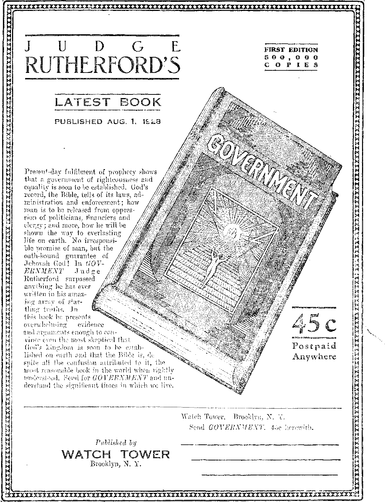

A JOURNAL OF FACT HOPE AND COURAGE
in this issue
its uses, and sources of world’s supply
CONDITIONS IN BOLIVIA a friendly criticism, and information about the natives
account of a delightful trip
fourth lecture of a radioeast series on “Reconciliation;” by Judge Rutherford
FIVE CENTS A COPY OR ONE DOLLAR A YEAR
Contents
—.....-....... ========d
Labor and Economics
News .Gleanings ................... 808
Carpenters’ Home at Lakeland .............808
Social and Educational
Alabama Takes a Step Ahead .............. 808
Effect, of War on Child Minds ............. 809
The University of Pennsylvania ............. 811
Manufacturing and Mining
Rubber and its Uses . . - . . . . . . . . . . . . . ■ 803
Diversion of Cotton-Mills Southward ........... 808
*• Finance—Commerce—Transportation
Dividends to Eastman Employes ............ 808
Editors Jollied and Called Fools ............ 807
Power Trust Rilling Uncle Sam ............. 808
Six Cents Carfare Ample ......... 809
War Farmees Find it Habu ............... 813
The Aluminum Company of Canada ........... 816
Political—Domestic and Foreign
Freedom of Inquiry in Ohio .............. 808
Kaiser Vetoed London Bombing ............. 809
Mooney Still in Jail ................. 810
No Interference in Foreign Affairs .
Items on Mexico ................... 812
Home and Health
Answer to Db. Morris Fishbein ............. 814
No More Aluminum Headaches ............. 816
Playing a Mean Trick on a Kn> . .
A Bachelor's Way of Cooking Rice ............ 824
Travel and Miscellany
Columbus One Time a Pirate .............. 817
Religion and Philosophy
Another Day at Carbondale .............. 820
The Children’s Own Radio Story' ...
I’ublished every otter Wednesday at 117 Adams Street, Brooklyn, N. Y., U. S. A., by WOODWORTH, KNORR & MARTIN
Copartners and Proprietors Address: 117 Adams Street, Brooklyn, S'. I . 8. A. CLAYTON J. WOODWORTH .. Editor ROBERT J. MARTIN .. Business Manager NATHAN H. KNORR.. Secretary and Treasurer
Five Cents a Copt—?1.00 A Year Maks Remittances to W GOLDEN AG.H Notice to Subscribers: We do not, as a rale, send an acknowledgment of a renewal or a new subscription. A renewal blank (carrying notice of expiration) is sent with the journal one month before the subscription expires. Change of address, when requested, may be expected to appear on address label within ons month.
Foreign Offices
British . . . .■ . » . 34 Craven Terrace, London, W. 2, England Canadian ..... 40 Irwin Avenue, Toronto B, Ontario, Canada Australasian ..... 405 Collins Street, Melbourne, Australia South African ..... 0 Lelie Street, Cape Town, South Africa
Entered as second-class matter at Brooklyn, N. X., under the Act. of March 3, 1879s
Volume IX
Brooklyn, N. Y»f Wednesday, September 19, 1928
Number 235
Rubber and its Uses
IT IS four hundred thirty years since Columbus found the natives of Hayti playing ball with a resilient, bouncing material, but it is only within the past twenty years -hat rubber has come to be one of the prime essentials of our civilization.
It was about the middle of the eighteenth century that the French explorer and botanist La Condamine identified, in Ecuador, the Hevea tree, and described the native way of using the gum, caoutchouc, to waterproof cloth. By 1770 a ball of the new material had found its way to England.
While experimenting with the ball, Joseph Priestley, the discoverer of oxygen, found that caoutchouc would rub out pencil marks and gave it the name rubber. It had an immediate boom among artists, the price soaring to 75c a cubic inch.
In the early 1800’s Brazil was exporting, rubber shoes and water bottles and the first rubberized fabrics were made in England and America, but these goods were unsatisfactory. In hot weather the rubber in the goods flowed, and in winter the fabrics were stiff and crackly.
The father of the rubber industry of the world was Charles Goodyear. An educated man, and an enthusiast regarding rubber, he was lecturing to his family on the subject, having in his hand at the time a small lump of caoutchouc which, he had mixed with sulphur to render it non-adhesive. This was in the winter of 1839.
By the merest accident his lump of caout-choue came in contact with the red-hot door of the stove. To his astonishment it stuck to the stove without melting, stretched easily without breaking and was no longer sticky. He rushed to the other side of the room, seized a knife and scraped the residue from the stove, while his relatives were convinced that he had gone insane.
But would the new rubber stand the cold? He nailed it up outside the door of his house that night and in the morning found it unchanged. He had discovered vulcanized rubber, and the name of Charles Goodyear became a household W’ord.
Goodyear a True Inventor
TT IS rare that any inventor derives any profit from his invention. Some one else gets hold of it and makes a business success of it, while the true inventor languishes in poverty; and this was the case with Goodyear. His secret was stolen by a competitor who came to his factory one bitter 'winter night in the guise of a tramp seeking shelter. He remained long enough to find the Goodyear secret.
Immediately after the Goodyear discovery of vulcanization L. Candee popularized the rubber shoe and put it on the market to stay. Goodyear spent his time trying to find new uses to which rubber could be put. At the exhibition in the Crystal Palace, London, in 1851, he made an impressive exhibit of rubber goods, contracted more debts, and was thrown into prison.
In 1860 Goodyear died owing more than he was worth, but had discovered that which now makes possible the automobile and thousands of other machines. After the close of the Civil .War rubber manufacture began to come into its own. The first article made to any extent was the comb.
A scientist at Manchester University, Mr. Peachey, has discovered a process of vulcanizing rubber with other compositions than sulphur, by a process of cold vulcanizing. The new material takes colors and a pattern quite readily and is serviceable as floor coverings and wall linings, as well as having a great variety of other uses. :
Tremendous Increase in Use of Rubber
ekbebt Hooveb is authority for the statement that the three greatest American industries, rubber goods manufacturing, the automobile industry, and the oil industry, because of their dependence upon the automobile business, hang for their operation upon raw rubber. Great Britain, the next largest manufacturer of rubber goods, imports less than one-fifth as much as America.
The tremendous increase in the demand for rubber is shown by the fact that the importations in 1911 were 72,046,000 pounds, while twelve years later they were 775,000,000 pounds, more than ten times as much. More than four-fifths of this goes into rubber tires. Over one-third of these tires were made in .Akron, Ohio.
Dr. B. Franklin Goodrich started the rubber tire industry in Akron with twenty men. Now the city has 65,000 workmen employed in turning out about $300,000,000 worth of rubber goods. One concern alone makes nearly 30,000 different rubber products.
It is inadvisable to attempt a classification of rubber goods. Some of the interests that depend upon rubber, besides the automobile business, are hospitals, electrical establishments, fire and rain protection, baseball, football, tennis, golf, cables of all sorts, drug sundries, surgeons’ sundries, dental sundries, stationers’ supplies.
Some of the things familiar to us ail are battery jars, tubing, steering wheel rims, buttons, fountain pen barrels, telephones, rubbers, raincoats, erasers, hot water bottles, garden hose. We are so' used to these things that we fail to consider how new they all are.
Dipped rubber goods, such as gloves and toy balloons, are made by dissolving rubber in benzine and dipping mandrels in the solution. It is a dangerous process. A new form of rubber tubing is insoluble in gasoline and oil. Greece imports annually 50,000 old automobile tires to make shoes for her peasants.
No material is known which resists the action of abrasive materials so well as rubber. It is invaluable as a lining for cement-grinding mills and as a conveyor for coke or other abrasive materials. Occasionally one sees sidewalks paved with rubber. Many automobiles now have rubber covers.
Some Sources of Rubber
EARLY five hundred plants, vines and trees produce rubber, but only a few of them provide rubber in sufficient quantity or quality to make them commercially valuable. Most of these plants grow in the tropics, but the ordinary and much despised milkweed is one -of the exceptions. For generations this plant has been considered good for nothing. Cattle will not eat it, yet it persists in living. Now we see that it may pay to cultivate it.
The guayule, which grows wild in southern Texas and northern Mexico, finds a ready market at Akron. The shrubs are uprooted, washed and ground and yield about ten percent of their weight in dry rubber. The rubber thus produced is considered inferior to Brazilian rubber and that brings us naturally to the Hevea tree, which even now supplies 99% of the world’s supply of crude rubber.
The Hevea or rubber tree grows in a moist climate, but will not grow in a swTamp; hence the saying that ca rubber tree must have its feet dry and its head damp’. A tree begins to produce when five years old. The yield increases as tire tree ages, but the total annual production per acre is only about 350 pounds.
In the South American Rubber Jungles
EW occupations of man are more perilous, more unpleasant or more poorly paid than gathering rubber in a South American jungle, and yet the work requires skill of a high order. The tree must be gashed just right. If too deep the tree will be ruined. If not deep enough the flow of the latex 'will be impeded. The latex is not the sap of the Hevea, but is a fluid sent forth to heal the wound in the tree.
The natives make their way through the 'dense jungles by paths which are so faint that only they can find them. Serpents, venomous spiders and ants are in their path. Seventy to one hundred and fifty trees a day must be visited, and the metal cups emptied into the run- < Ker’s pail. The gatherers often have to travel six to eight miles to complete their circuits.
It takes a year’s milk of two full-grown Hevea trees to make rubber enough for a single cord tire. Curiously enough, if a pail of latex is allowed to stand the rubber in it will rise to tho top like cream. A.t night the native cooks his latex, stirring it slowly until the milk has evaporated and only the pure rubber remains. This is a mean job, as the smoke is acrid.
The work of rubber-gathering is so perilous and is managed with such cruelty that in the years from 1900 to 1912 twelve thousand tons of rubber were collected at a cost of thirty thousand native lives. Many of these natives were starved, shot or flogged to death for failing to turn in as much latex as their employers thought should come to them.
When these conditions were first uncovered by explorers and travelers many British directors of the Peruvian company involved, men prominent in London society and finance, gave up their directorships; but there are still many British stockholders in the company. The management is now entirely in Peruvian hands.
Hoiv Brazil Lost Her Rubber Industry
FIFTY years ago Henry A. Wickham, an Englishman familiar with the rubber tree and with its possibilities, chartered a steamer, made his way to South America, and smuggled seeds through Para on the pretense that they > were botanical specimens.
The seeds were planted in Kew, England, . under glass. They grew and were transplanted to Ceylon, and from that small beginning there are now five million acres of rubber trees in Ceylon, Sumatra, Borneo, Malay Peninsula; and those trees control the rubber market of the world.
Until 1913 Brazil remained the chief source of rubber, but now the British and Dutch plantations in the Far East produce nine-tenths of the supply. About four-fifths of the plantation output is in British hands. The Brazilian supply is dropping oft’. Earnings are insufficient to maintain life.
For several years past the British Government has been restricting rubber production under the Stevenson Act, so as to keep prices up, but it is announced that from November 1, > next, all restrictions will be removed, the reason for this being that the Dutch plantations are increasing their acreage so rapidly as to imperil the British business.
The cost of producing rubber is around fifteen cents a pound. Rubber plantations can not be neglected. If the trees are neglected for a year the jungle will grow up around them and make their future harvesting difficult. Rubber tappers in the Straits Settlements receive eight. pence a day, or about sixteen American cents.
American Attempts to Grow Rubber
ALTHOUGH using two-thirds of the world’s rubber, America grows only three percent of it, and in case of another World War would be as helpless as an American citizen in a fight with one of these public service companies. Uncle Sam today is running around on rubber. Take the rubber from under him and he would hardly move. Imagine America without automobiles 1
Harvey Firestone has virtually taken a mortgage on the life and liberties of the government and people of Liberia and expects to be harvesting rubber in 1930. It is too bad that it has seemed necessary to impinge such hard conditions as are required of the Liberian people to get this industry.
Henry Ford has secured a concession of four million acres in the Amazon valley of Brazil, lying just east of the territory traversed ■ by Theodore Roosevelt when he descended the River of Doubt. The concession calls for the planting of a certain number of rubber trees .every year. The land is now unbroken jungle. It is a safe bet that .Henry makes a success of it. It is expected that airplanes will be used in carrying mail to and from the concession, and a line of Ford boats will be installed. He will also build 1,000 miles of railroad to it. —
The United States Rubber Company has about seventy-eight square miles of rubber plantation in Sumatra. In 1922 this company reported, net profits of $12,662,110 and celebrated by announcing a ten-percent increase in the price of auto tires and tubes.
Germany Makes Her Own
THE German chemists have shown that they can do about everything anybody wants done, and do it with no raw materials to speak of, and it is a fact that they have made synthetic rubber. The rubber, however, is thus far not all that could be desired. It absorbs oxygen from the air, can not be readily vulcanized, lacks elasticity and plasticity in the soft state, and is not regarded by the New York rubber trade as fulfilling the hopes of its discoverers.
A great improvement has been made in the separating of rubber from the latex. By th® new method a tiny stream falls on a rapidly re-
n. GOLDEN AGE
volving disc in a hot room. This breaks the latex up into tiny particles. The air mingling with these tiny particles dries the moisture at once, carrying it off in the form of vapor.
Hereafter the latex will probably be shipped in liquid form direct to America; and cars of latex may soon be a common sight on our railroads. It has been found that latex will remain sweet indefinitely if ammonia and certain other preservatives are added to it in correct proportions.
New and better methods of making rubber goods are being used. Cloth is combined with rubber by two general processes. Frictioning forces rubber into the cloth, while spreading, so. called, lays a thin coat of rubber over it. By a new method of treatment the useful life of
rubber may be prolonged to as much as sixty years. .
By a new method of manufacture articles may now be electroplated with rubber, resulting in seamless' rubber goods of greater strength and elasticity than those produced by older methods. Molds of any size and shape can. be made, and plated with rubber as thin as tissue paper or as thick as a brick wall.
Kneadable rubber is now made. It can be colored and molded into any desired shape. Furniture is made of rubber. The best of it is that rubber can be used over and over. Perhaps the tires you are riding around on now may be made in part from the tires used by the president of the United States a year ago. Who can say?
Alabama Takes a Step Ahead
ALABAMA has taken a long step ahead m ending the convict leasing system, which has hitherto given the state so bad a name. The prisoners have all been brought out of the mines and placed at' work on roads or state farms.
Dividends to Eastman Employes '
IN THE last seventeen years the Eastman Kodak Company has distributed more than $55,000,000 in stock and cash to its employes. The wage dividend distributed this year was three and a quarter million dollars, the largest in the history of the company.
Identification Cards
THE Department of Labor is now issuing identification cards to immigrants, and requesting that they be kept with care so that they may be shown at any time called for. No penalties are attached for failure to show the cards, and no law requires them to be shown.
TF/rafes in North Pacific
WHALES are reported as more plentiful in the North Pacific, and new expeditions are being fitted out for their capture. A single .whale may yield forty tons of oil, worth $100 a ton, besides hundreds of dollars worth of whalebone, fertilizer and chicken feed.
Mitchel Field’s Landing Beacon
TT IS claimed that Mitchel Field’s new land
ing beacon with its gas-filled tubes of the equivalent of 500,000,000 candle-povzer will provide an orange-red light which can be seen through seventy-five miles of mist and fog. It seems hard to believe that, but who can deny it?
Britain’s New Airplane “Ripon II”
ID BITAIN’S new airplane, “Ripon II,” can ascend almost vertically and remain in the air twelve hours. It can travel several miles a minute, carries a load of two tons, is equipped witli machine guns and can discharge a torpedo weighing a ton.
New Use for an Airplane
THE Argentine Republic has produced something new in the world. A man under sentence to twenty years’ imprisonment on a penal island dressed himself in women’s clothing, hopped into an airplane and literally fled away to parts unknown. This is the first recorded jailbreak by airplane.
Around the World in Two Days
Captain- Geobge Wilkins, who flew from Alaska to Spitsbergen via the North Pole, believes that within a generation the circumnavigation of the -world in forty hours will be an accomplished fact. That would require a sustained speed of six hundred miles an hour, nearly twice that thus far attained.
Better Times in Europe
ETTER times in Europe are indicated by the fact that the fifteen million people of foreign birth now in the United States are now sending back to Europe only $220,000,000 a year as against $700,000,000 ten years ago. Restrictions of immigration also help to cut down the remittances.
Immigration Hardships Removed '
IMMIGRATION hardships have been removed
by a new alien law now in effect By the new act families which have been long separated will be reunited. Wives and dependent children of citizens, skilled farmers and alien residents ■will be given preference for admission over others in the immigrant quota.
Editors Jollied and Called Fools
HHESTIMONY before the Federal Trade Com-J- mission shows that publicity directors of the power trust made a specialty of calling country editors by their first names, slapping them on the back, and entertaining them, and then, when by themselves, they called the editors fools for swallowing their bait.
Not Necessary to Answer Conundrums
WHEN Rosika Schwimmer, cabinet member of the Karolyi government of Hungary, applied for citizenship in the United States her request v7as refused on the ground that she did not answer to his liking a question put by the court as to what she would do in a certain emergency. The appeal court decided, that the duties o'f citizenship do not require the correct answer to conundrums. This sensible and genuinely American opinion was awarded by the Federal Court of Appeals at Chicago.
Old Ladies Fib About Blacklist '
IT SEEMS that the old ladies not only had and used Fred Marvin’s blacklist in Massachusetts, Michigan and Kansas, and elsewhere, but when they were accused of it they denied it, and that is fibbing, and it is not nice for old ladies to fib. But fibbing in public is very popular in the United States nowadays. It got such a powerful start during the World War that anybody who tells the truth about anything is considered peculiar, and worse than that, a red; and the first thing you know he gets his name on the blacklist of the sewing circle.
2,151 Bad Brooklyn Boys .
URING the year 1926 there were at various times confined in the city prisons of Brooklyn 2,754 boys between the ages of 16 and 21. Moreover, out of 150 defendants in burglary eases during three months of 1926, eighty of them were boys between the ages mentioned. The boys need employment.
English Barmaids to Go
BILL in the British Parliament proposes that no more may the prettiest girls in England get jobs standing behind a bar and ministering to half-soused men. At the present time 26,000 women and girls are engaged in this work. Many' of them eventually become drunkards, due to the treating habit of patrons.
Seventy Million Pounds of Gum
rpHE world chews seventy million pounds of gum a year. Would you believe that the habit could be so widespread? Primarily an American habit, it has spread to the four corners of the earth. London police headquarters has had to issue an order that patrolmen must not chew while on duty.
Manicuring a Tiger :
IT IS a rather delicate job manicuring the finger nails of a tiger, but it has just been done at the Central Park Zoo in New York. The tiger was first lassoed, then a two by four scantling was put into his open mouth to give him something to chew on, then his legs were lassoed until he was entirely helpless and his ingrowing toe-nails were neatly trimmed. He seemed immensely relieved after the manicuring was finished, but it was a wild job while it lasted.
Ancient Dyes Not So Good
THE reason ancient dyes have had such a wonderful reputation is because the climate of .Egypt, where the specimens were found, is very dry, and the specimens were usually in air-tight compartments. When exposed to the light all the old Egyptian dyes except indigo fade quickly. It is believed that no better dyes have ever been made or used in the world than those now made and used in America. Processes, taken from Germany during the war, have been so improved that American dyes are now supreme here and in many other places.
Single-Family Dwellings
IN THE city of Baltimore 94.4 percent of the rp new houses built are single homes. In Phila-
delphia and Pittsburgh about 72 percent of the new homes are single ones. In Boston, Chicago and New York the percentage of single homes is less than 16 percent. In most other cities it is less than 50 percent.
Diversion of Cotton Mills Southward
rp.H.E long hours and low rates of pay per-■■••• mitted in the South have rapidly turned the cotton mills in that direction until now fiftyeight of every hundred yards of cotton goods made in the United States are produced where the cotton is grown. The eight hundred plants of the South turn out a billion dollars’ worth of goods a year.
Controlled Eighty Companies
GENTLEMAN has just died in London, David Yule, of Edinburgh, who at the time of his death controlled eighty companies, largely in Calcutta, 'where lie spent fifty years of active business life. His entire fortune of $100,000,000 is left to an only daughter twenty-four years of age, making her the wealthiest woman in England.
Power Trust Crowd One-Seventh Honest
THE New York American in an interesting editorial shows'the crooked way by which the power trust crowd manage to take 55% profit where legally they are entitled to but 8%. By their thus taking seven times •what they are entitled to we have a fair measure of the honesty of these men. They are one-seventh honest and six-sevenths crooked.
Power Trust Riding Uncle Sam
exAtou Nonius says: “The power trust is riding Uncle Sam as the mythical ‘old man of the sea’ rode Sinbad the Sailor, and the one sure method by which its strangulation grip can be broken is government competition. Nothing like this gigantic monoply has ever before appeared in the history of the world. It dwarfs the Standard Oil Company in magnitude. In the face of such a concentration of capital, industrial control and political power, the state and national governments can maintain their economic freedom and the ability to govern themselves only by prompt, constructive action.”
Railroads Practising Economy
AKING a lesson from the beef-packers and from Henry Ford the railroads are now making a careful study of their waste materials and are finding much benefit from it. Old materials once thrown away are being used for other purposes which they serve quite as well as if freshly bought. ■
Women Smoke in Erie Diners
EEPING pace with the demands of women that they be just like the men in every way in their power, the Erie Railroad announces that hereafter women may smoke on their dining-cars. The cars are said to be so built that the air in them can be changed every three minutes, which is an item to those who find tobacco smoke sickening.
Reforestation Under Way
WENTY-FIVE million new trees is not much for a country the size of the United
States, but it is something, and by far the largest number of trees .ever planted here in one year. This'is the number which, with, the fall * plantings, it is expected will be started this year. Nineteen million of these are already in the ground.
Carpenters’ Home at Lakeland
HE Brotherhood of Carpenters and Joiners of America has erected a beautiful home
at Lakeland, Florida, for the use of retired members of the craft. The building of 250 rooms is located on a tract of 1826 acres of land, six hundred acres of which, are in orange, tangerine and grapefruit trees. The home is debt free. '
Freedom of Inquiry in Ohio
TN ATHENS, O., Prof. Wesley H. Maurer of
the Ohio University, and editor of the Athens Messenger, inquired of a newly formed civic association whether that organization favored or opposed organized labor. As a result of the 4 mere inquiry he lost his job as editor and also as professor of Journalism, which shows what a dangerous thing it is to even ask a reasonable question in the state of Ohio. When employed as professor of Journalism, in which his wmrk has been eminently satisfactory, Prof. Maurer was told his term of employment would be for six or seven years.
Disfranchisement in South
DUE to the barring of the Negroes from the polls in the South, it takes only 17,000 votes to elect a representative to Congress from South Carolina, Mississippi, Georgia, Louisiana, Texas, Virginia and Alabama; but fcin the states of Indiana, Illinois, New York, New Jersey and Kansas it takes 77,000 votes to accomplish the same thing.
Brazil Enlarging Coffee Market
THE republic of Brazil has entered into contracts with 1,200 firms in Germany and
Switzerland to do specific propaganda work in various European, African, Asian and South American countries to enlarge the coffee market. Coffee bars wifi be opened in all the principal population centers where coffee is net now generally ' w ftffy ytftirk
Rumania Lets Up on the Jews
T) UMANIA, stung by the flood of criticism ■L* leveled at her for her barbarous treatment of the Jews, has finally made an agreement with them by which they are to have a subsidy of $60,000 for their religious work. A partial loaf is much better than none, and Jews generally; are pleased with the Rumanian Government’s modified attitude.
Kaiser Vetoed London Bombing
THE New York Times is authority for the statement that after the German War Office had prepared a plan to annihilate London by sending twenty Zeppelins each carrying three hundred incendiary bombs the project fell through because the Kaiser definitely and emphatically vetoed it. The Zeppelin raids over England had military points as their objective.
. Six Cents C&rfweAmpIe> » . ■
DETROIT finds six cents street earfare is ample when the street railways are operated under municipal ownership. In seven years, unchr municipal ownership, all charges v have been met out of earnings and almost $5,000,000 has been accumulated toward a depreciation fund. Under private ownership, other cities are charging up to ten cents and giving abominable service.
Effect of War on Child Minds
STUDIES made of the effect of German oecu-pation of Warsaw in 1918 revealed such depths of 11 al red that only now are the results of these studies being made known. How clearly this shows the need of protecting the minds of the young, and how it exposes the greedy commercialism of the power trust in attempting the debauchery c-f these minds white at their most impressionable stage!
.........
IN THE United States there is an automobile for one person in five; in Hawaii, one in eight; in Canada and New Zealand, one in ten; in Australia, one in fourteen; in Alaska, one in twenty-eight; in Argentina, one in thirty-eight; in Great Britain and France, one in forty; in Ireland, one in eighty-one; in Germany, one in 137; in Italy, one in 254; in Brazil, one i$ 264; in the whole world, one in sixty-four. |
Louisiana Supplies the Frogs /
PEOPLE who have never eaten them .have no idea how good frogs’ legs are. But. a good many people have tried them and like them immensely. There are now fifty frog merchants in Louisiana.. They ship a million pounds of dressed frogs to New York, Detroit, Chicago and St Louis every year. One-third of Louisiana is swamp-land, which makes it ideal as a place to get a good crop.
WHEREVER ten Guatemalan children are without educational opportunities, a new law requires that owners of adjacent farms, actbries; ;;©r j othiriblBOillil® iirililiY must provide them. One child of each public school teacher who has taught ten years will be given a Government education. No further Government aid will be given to parochial * . t -11 it tit; <; - < < ;
Insurance Against Unemployment
SEVENTY thousand clothing workers in New
York city are entering into a contract with, their employers to provide insurance against unemployment. The company pays n% of its total wages into a fluid which after one year of accumulation of it may be withdrawn for the relief of workers through unemployment. This plan, in Britain called the '‘dole”, has been tried successfully in Chicago and Rochester.
Toll Roads and Bridges
THEBE are still a good many toll roads in the United States. They are anachronisms and ought to be condemned and bought up by the states. Most of them are in poor condition. Toll bridges are in the same class. There were 425 toll bridges built or proposed at the beginning of the current year.
Curious Generosity
A LONDON dealer in old iron loaded dowm the barrow of a detective who was posing as a street hawker until the poor man was hardly able to trundle it. He meant it all in kindness. A London multimillionaire, father of Elsie Mackay, left her entire fortune of $2,500,000 to the British nation and not a cent to the wife or children of Captain Walter Hinchliffe, who was the pilot of the plane in which Miss Mackay perished.
Mooney Still in Jail
ON EVIDENCE which all who have investigated the matter believe to have been perjury, Thomas J. Mooney, labor leader of San Francisco, is still in prison under a life sentence. Mooney insists that he was “framed” by District Attorney Fickert, of San Francisco, and the police of that city, and President Wilson’s commission established the substantial accuracy of his charge. The man is innocent, but has been in prison ten years, and is still there, not because he committed murder, but because he was a labor leader and offensive to the Big Business crowd that runs San Francisco.
Utilities Gone Silly
EVIDENCE given in Washington shows that in a silly effort to explain away the fact that charges for electric current in the United States are more than three times what they are in Canada, the Wisconsin Utilities Association has prepared a song-hook for use at its meetings. The first tw7o lines of one of the songs lyingly and suggestively says: “Yes, we’ve no excess profits, no overgrown surplus today.” The fact of the excess profits is bad enough. To lie about it is worse. And to set the lies to music is silly. Madness and silliness are closely akin to each other, and today the public utilities crowd is literally mad, drunk with extortionate profits.
German Chemical Triumphs
NOT only has the synthetic nitrate of Germany profoundly affected the Chilean nitrate industry, but the camphor formerly obtained from Japan is now made synthetically in Germany, and the indigo which we once got from British India also now comes to us froi^. the German chemical establishments.
Independent Farmer Doomed
HPHE independent farmer is doomed to go the J*- way of the retail store. Big Business can make farming pay by using methods out of the reach of the independent farmer. A farm corporation in Montana plows a thousand acres a day, seeds or harvests two thousand acres a day and threshes thirty thousand bushels a day. The farm corporations wrill grow and the independent farmers will shrink. Watch the tendencies and see.
No Interference in Foreign Affairs
TAESPITE the sending of twenty-six warships U to China and the maintenance of troops in Honduras and Haiti, we have the assurance of President Coolidge that during his administration there has been no American interference* in foreign affairs. Four different reasons have been assigned as to why American troops are in Nicaragua: protection of property, protection of canal concession, rebuking Mexican interference and finally guaranteeing Nicaraguan elections. All the bombing that has been done of towms occupied by women and children has been done in a friendly way, but it has killed a good many Nicaraguans.
Silica Gel in Refrigeration
ICELESS refrigeration is accomplished in refrigerator cars nowadays by the employment of silica gel, a hard, glassy material, exceedingly porous, possessing the property of absorbing vapor in great quantities, and giving it up on the application of heat. The refrigerant used in connection with it is liquid sulphur dioxid. As the silica gel absorbs the vapor of the liquid^ sulphur dioxid in the car the car is chilled. Heating the silica gel releases the refrigerant and the chilling process goes on again. All that is needed is intermittent heating of the silica gel to secure permanent refrigeration; and this is now practically secured, and perishable fruits cross the continent without any deterioration whatever. -
Urge Freedom for Centralia Prisoners
THE governor of 'Washington is being petitioned to free the eight prisoners who were so unwise as to defend themselves when the American Legion raided their hall on Armistice Day, 1919. Seven of the jurors in the case have 4 made affidavit that they believe the men innocent, saying they were intimidated by the presence of troops at the trial, by the bias of the presiding judge and by the pressure brought to bear by the lumber interests. The men have been in prison over eight years.
Eight Mice at a Clip
h NEW form of mousetrap is so constructed -“■ that each mouse as it is caught drowns itself i-n a pail of water, and in the act of drowning throws open the door to its successor. As many as eight mice in succession have been caught in a single night by this device.
The University of Pennsylvania
nnHE University of Pennsylvania is so much interested in the great fight being made on the public utilities question, and it is so thoroughly entrenched on the wrong side of that * cpiestion, that it has allowed one of its professors to deliver lectures for the power trust denouncing government ownership of public utilities and has condoned his receiving $250 for each such lecture. But when another professor of the same institution made a few complimentary references to the Soviet system of education lie was told he must get out. Most wealthy men today leave their fortunes to such institutions. Good investment.
Oratory at Harvard
IN I1IS class oration at Harvard, Barrett
Williams, of Boston, after denouncing the most terrible and brutal war in history, the increase in debts and standing armies which has followed it, and the dictation of a peace which was not peace, came out with the following: “Our political and moral items must be written ». in red ink. They show a cabinet in which one member was bribed to deliver up public domain valued at a thousand million dollars. Another member obtained a portion of the bribe funds to pay off the party deficit, while a third turned the Department of Justice into a den of corruption.” That young man had better look out. He should remember what happened to Sacco and Vanzetti.
Savings Less than Supposed '
THE Chase Economic Bulletin for June con
tains an interesting article on “Bank Expansion” by Benjamin M. Anderson, economist of the Chase National Bank of New York, in which Mr. Anderson shows how, under varying conditions, banks may erect an additional fabric of bank credit two, ten or nineteen times as great as their surplus reserves, placing a tremendously increased volume of money in investors’ hands without a corresponding growth in their savings. A vast amount of this hollow egg-shell sort of prosperity is now all about us.
The Private Ownership Humbug
JB. Sheridan, publicity director of Missouri
• utilities, is out with a letter saying: “There is nothing inherently sacred in private or public ownership. It all depends on which works out best, for the public. We talk a lot about what private owmership has done, yet many municipal plants were built because no private business would build them. If cities and states own and operate highways, schools, streets, sewers, water supply, why not electric and gas plants? I believe in private initiative, but I don’t believe in subsidizing it three to six cents per kilowatt hour. Privately-owmed industry should be ashamed of itself to permit a municipally-owned plant, operated on the square, to undersell it four to six or seven cents per kilowatt hour. Don’t say taxes. Taxes are less than 23/100 of a cent per kilowatt, hour in this state.”
National Popular Government League
A FTER making all necessary and proper adjustments regarding taxes, dividends, etc., twenty-one Ontario cities have an average rate of 2.4e per kilowatt hour and thirty-two cities on this side of the line have an average rate of 7.4c per kilowatt hour. The National Popular Government League wants to know wThy the extra five cents per kilowatt is charged on this side of the line. The first thing you know, even common burglars will not be safe from annoying questions as to why they are stealing, but we answer the question. They are taking the extra five cents on this side of the line because they need to use the money in buying up college professors, newspapers and statesmen to argue and write against publie ownership. ' '
Ginn and Company on the Rack
THE testimony at Washington shows that
Ginn & Company, publishing twelve million textbooks yearly, have had an agreement with the power trust for a yearly review of books on economic subjects by a committee representing the utilities. This idea of poisoning the minds of the children, so that when they are grown up they will think it is O.K. to sell a thing at twenty times what it cost to produce, is a new feature in American education.
Country Stores and Automobiles
/COUNTRY stores can not carry the stocks of city stores, and with the extension of paved roads are finding it harder and harder to compete. The automobiles are carrying much’ of the country store trade to the towns, and much of the town trade to the cities. In order to kee^ on an even keel most country stores are finding it necessary to put infilling stations. Thus they are helping to feed the machines that are taking their trade away from them.
Items from Mexico (Mexican News Service)
CCOltDTNG to the records of the Department of Industry. Commerce and Labor of the Mexican government, only twenty American oil companies are interested in Mexico. The complete figure for all companies and private individuals exploiting oil fields in Mexico (foreign and Mexican) amounts to 120. Some half-dozen of tho twenty American companies are subsidiaries of the Standard Oil Company, thereby reducing the number ultimately interested to about fourteen. It is the high concentration of this compact nucleus and their ability therefore to act practically as a single unit which, makes for their power with the State Department at Washington and gives them the possibility of standing out against the laws passed by the Mexican government for the best regulation of Mexico’s oil industry lor all concerned. The American State Department in pressing its policy of protection for American interests abroad is actually in the present difference with Mexico plighting the interests of the whole American people against their neighbors for the benefit of twenty companies at the most
While, as a matter uf fact., under the most strict legal enforcement of the law. the Mexican legislation on oil and .land does not in any way menace or endanger the existence of the big oil companies, on the other hand, smaller commercial activities in Mexico stand to be ruined by the present crisis provoked by and for the oil interests. The home governments of those entrepreneurs which feel so strongly the responsibility of protecting the few powerful companies and talk loudly about acting in the interests of their nationals abroad, permit the ways and means of the oil companies to precipitate the. ruin of hundreds of manufacturing importers and small holders caught in the maelstrom but who arc in no way interested in the outcome of the legal discussion about the supposed menace to the oil interests.
Every North American manufacturer and exporter suffers now in the crisis, will continue to suffer while it lasts and will feel for years to come in Latin America the effects of the ill will the oil companies are engendering for him . . . an ill will which will outlast the last drop of* oil any twenty North American companies and as many more oil companies, foreign or native, will be able io extract from Mexico’s soil.
Mexico is only in the beginning of the development of its small industries. Even a cursory glance into the history of the country will explain the situation. Up to the time and during the first part of Porfirio Diaz’ regime, foreign capital in any appreciable amount was not encouraged and was not interested to come to Mexico. With the discovery of oil in 1901. the -rush began. And, unfortunately, practically . since the country has been conscious of the vast-ncss of its oil deposits, internal political revolution has held Mexico in its throes and harassed one government after the other. Only under the last two administrations, those of General Obregon and President Culk-s, has there been opportunity to think at all of econonue develop-* monf to undo the wrongs the country has suffered for four hundred years.
The four state agricultural schools (central schools, as they are called), which were established last year in the slates of Michoacan, Guanajuato., Hidalgo and Durango, arc alone such a tribute to the enormous work for internal peace and organization going on in Mexico ■ today as to make unnecessary the mention of any of the other projects in the vast program being carried on by the Calles government—the 5000 rural schools maintained last year. 3000 of them newly established during 1926, the road building program, the irrigation projects, and «»so on without number.
The following few simple words of the representative of the peasant’s organization in the State of Hidalgo, who expressed the gratefulness of the humble people for the school, explaining how the older members of the community realized fully it was the best preparation for the man who works the soil, tell best of what is happening in Mexico today.
The earth is a mother, but for the Mexican peasant it has always been a stepmother because its fruits, which now come to the people almost as a blessing from heaven and from a president, have never benefited us.
The parcel of land which we now possess constitutes the tranquillity and peace of our families. ‘ Now ws have a home and in it a fatherland.
The number of inhabitants of the Mexican Eepublie, including foreigners, amounts to 14,334,780 persons, according to the last available official figures. Pure Indians account for 29.16% of this figure; Mestizos (mixed Indian and Spanish), 59.33%; whites, 9.8%; other races, 1%; all foreigners without distinction of race, 0.71%.'
TTTE USED to hear the.slogan, "Competition V ¥ js the life of trade,” but as people get wiser in the general increase of knowledge of . our day they have learned that, when carried to a conclusion, it is suicidal and will finally dev stroy itself, culminating in warspetdw- - :J :?1
The shortage caused by the World War gave the opportunity for profiteering and a chance to control the price at which an article would be sold, and business men generally have net been slow in learning that cooperation is much safer and profitable than competition, so far as their "community of interest” is concerned. They are learning by experience that, cooperation is the true principle that all should follow. And thus it. has come to pass that all lines of business, instead of competing with one another, are combining in companies, corporations, merger?, secret understanding, communities of interest, etc., and in this way are able to control the price at which their output is sold, and run their business on a safe and sound basis and know beforehand just what their profits will be.
This is being done in manufacturing, banking, transportation, mercantile, mining, and practically all lines of business except fanning, which, from the very nature of it, the numbers and general conditions, makes it practically impossible for the farmer to take advantage of this principle of cooperation, except to a very slight degree.
Take as an illustration the International Harvester Company, which controls practically the whole farming machinery output. Their prices are set, and if the farmer wants machinery, without which at the present price of labor he can do nothing, he has no recourse but to pay them whether he is able or not; and when he has to buy on credit, the banks furnish the money at a good rate of interest, and the poorer the security he can give, tlio more interest he has to pay, making it the most expensive to the one least able to pay it.
Notv if the farmers were able to set the price at which they sell their products, they could make it in proportion to the cost; but here lies the whole problem: they must compete in tire open market, the demand sets the price, and the farmer has no recourse left but to take what ho can get; and so the price is set for him both
and the nether millstone, which is crushing the life out of him.
Many years ago our legislators with, good intention, seeing the result that must, come from monopolizing one jxrticlo of trade, passed what in known as the Sherman Antitrust Law, which made it unlawful for any company to combine with another to control prices, but it seems to
that the larger the operating concern, and the greater its output, the cheaper it can produce an article, and the multiple system of manufacture so general, instead of working hardship on some classes, would ho a blessing to the whde human family if conducted on principles of equity. But with the selfish principle in mankind, it only increases his opportunity to crush the industrial life out of his fellow man.
But while we see little or no hope of relief for the farmer from legislation, those who are privileged to have a clear mental view of God’s wonderful plan for the blessing and restitution ©f the human family can rejoice in the knowledge that a positive and comprehensive plan has been arranged and that His relief is sure in the glorious reign of righteousness which Christ will inaugurate, and which is even now at the door. From an industrial standpoint, no class of society can surely have more interest in a just and righteous government than the farmer.
Morris Fishbein, M. D., has spoken and is still “speaking”. He needs no introduction; for, having easy access to nearly every publication in America and it being his duty to keep the American Medical Association and its doings continually before the public, his name is often seen and he is a well-known man.
What has he said about aluminum poisoning, and why has he said it? On pages 26 and 27 of the Scientific American of January, 1927, Dr. Fishbein disposes, once and for ever, of the opinions advanced by the author of this article in the following carefully chosen language:
ALUMINUM IN CANCER
A dentist of Toledo, Ohio, for what reason it is not apparent, has issued a pamphlet of 36 pages, presumably sold for one dollar, although sent free to libraries, school teachers an*.' hardware stores. On the basis of some naive and totally immaterial experiments, he says that the use of aluminum cooking utensils increases the incidence of cancer. The proverb “post hoc, ergo propter hoc” is here revealed to its highest extent. It is claimed that the use of aluminum has increased at the same time that cancer has increased; therefore the latter is due to the former. It might equally well be said that automobiles are responsible for cancer or that bobbed hair or any of the other things that have increased during the past 25 years share this responsibility. The reasoning is a typical example of the way medical statistics are misinterpreted by those who know' nothing of biometry.
It is not at all certain that there has been an alarming increase in cancer, since cancer is a disease of advanced age and more persons are now living longer than used to reach middle age. Life expectancy has advanced, in the past century from 35 to 55 years. Investigations in Great Britain by workers under the auspices of the Medical Research Council showed that the cooking even of acid fruits and vegetables for long periods of time resulted only in the slightest traces of aluminum in the juice when the process was completed. It j* kjKwn that alkaline substances, such as sodium carbonate or bicarbonate will eat away aluminum, but these substances do not enter into cooking processes. The theory of the Toledo dentist is pernicious in that it is used to disseminate false advice concerning cancer and to attack the use of a well established household utility.
It is apparent from the above article that Dr. Fishbein hoped to make it appear to the reader that the author may have had some ulterior or prejudicial motive in urging his opinion that alum baking powders and aluminum cooking ware are extremely dangerous to human health. Such is not the case. It is still a human possibility to be guided solely by principle and con- * viction. But just to make it interesting to readers who relish true sportsmanship and to give Dr. Fishbein, whose record for discrediting safeguarding disclosures and throwing the weight of his official influence on the side thought by many to be opposed to public health welfare may not be so unassailable, something to think about, let this suggestion be considered: This author will pay $1000' to Dr. Fishbein if he can. prove that one hundred dollars or more or the promise thereof, from any person, concern or group, to whose financial advantage would be the abandonment of either alum baking powder or aluminum cooking ware, as consideration or compensation for the publication or distribution of this book “An Opinion Upon Aluminum” which is the subject of Fishbein's profound article as reproduced above, has been paid to the author.
And this author will pay another $1000 to Dr.* Fishbein if the latter can show that the interests he officially represents, do not often receive considerable sums of money from one or mor© of the manufacturers of aluminum cooking ware and perhaps from the manufacturers of alum baking powders.
Further, if the allurement of anti-aluminum
money equals that of aluminum advertising . money received by the American Medical Association, a third offer may interest the Doctor who endeavors to create public opinion that there may be some sinister or Unworthy motive behind this author’s campaign against alumi-* num poisoning. Another sum of $1000 will be paid to Dr. Fishbein, if he or any of his detectives, agents, lawyers, “workers” or representatives can find and judicially disclose any motive on the part of the. author for publishing his “dollar book”, other than a .clean, honorable, worthy desire to disseminate what he believes to be useful knowledge and to derive an author’s customary honorarium.
Now if this disinterested (?) opponent of the author’s aluminum poisoning theory is a truly good sport, he will not only accept one or all of these three offers (or challenges) but will oome forth with a sportsmanlike proposition to pay to this author life sums if he fails te win this author’s money. It comes so easily from the facile pen of this A.M.A. editor to pronounce against seekers after and teachers of health* truth, if they happen to be “persona non grata” with him, that it would surprise many besides this author if he should meet the frank conditions of the foregoing offers with aught but silence until he finds again suitable opportunity to indulge in personal animus and innuendos, believing that, without due reckoning, it, will prove a good def ease to his obstructive and destructive aluminumizing propaganda, if propaganda it may be properly called.
Dr. Fishbein is the editor of the Journal of the A.M.A., the official magazine whose circulation is mainly among member physicians. He is ■ also the editor of Hygeia, a very attractive magazine) distributed to the public in the interest of medical propaganda, for it is published by the American Medical Association. The A. M. 'A. directly or indirectly has to do with eight or more other magazines of different names, and it is probable that this editor is the governing and directing genius of them all.
It would illuminate the discussion greatly if Dr. Fishbein would kindly summarize and publicly report in Hygeia or in Scientific American, the number of column-inches of paid advertis-ing’published in the American Medical Association publications, even during the year 1927, for the makers of aluminum cooking ware and alum baking powders. He might also publish the total amount of money paid, if any, to himself or to the A.M.A. for such advertising in 1926 and 1927. In all probability it would run into large figures. We find aluminum ware advertising in one issue of Hygeia to the extent of two whole pages, two-thirds of another page, and one-fourth of another page, and we are unable to find any advertising matter of other than aluminum cooking ware in this magazine, or of other than alum baking powders.
Now, may it not be expected that such large sums of advertising money might influence a man, even so greatly honored, to have some other possible motive than to enhance the public health welfare when he uses so representative a vehicle as the Scientific American and numerous other lay publications to question the motive of this author and to discredit his important disclosures? It is a suggestive circumstance, at least, that he seems to come to the defense of- money-paying advertisers who use the columns of publications with which he is prominently identified. And this was done without any investigation of the matter of aluminum poisoning, so far as this author has been able to ascertain. The reader can judge.
It is no idle deduction that the recorded alarming increase in deaths from cancer has been coincidental with the growing use of aluminum cooking ware and alum baking powders. The facts stand against all of Dr, Fisbbein's statements. And it is no credit to the group he heads that the reason (or cause) for the tragic fact of cancer increase has not been found by then?. It is still less creditable that, not having discovered the cause, their chief spokesman should thus endeavor to draw attention and confidence away from aluminum causation instead of frankly joining in the author’s effort to establish the probability of such causation. Such proof seems to be clearly at hand and it needs more than anything else the influence of such high-positioned men as Dr. Fishbein to warn the entire aluminumized public of the danger believed to be involved in the use of aluminum cooking ware and alum baking powders.
The reader may also wish to refer to the Journal of the- A. M. A., October 23, 1926, page 1397, for another similar editorial entitled “Aluminum and Cancer”, in which much the sama sort of language is used as in the Scientific ■American article reproduced above. The writer holds that physicians have the right to expect truth and facts in their official publication. The writer challenges Dr. Morris Pishbein to competently prove that his (the writer’s) own opinion and the scientific testimony, statements and opinions presented in the writer’s articles, are untrue and without foundation in fact. And in the absence of such proof by him, the writer asks his readers to regard his comments as trivial and wholly unworthy of this official spokesman for the great American Medical Association, many of whose members refuse to admit that he reflects their views.
WE DISCARDED our aluminum ware after reading articles in The Golden Age and trying the test indicated. I tried out the boiling one-half hour, and it was just as stated in The Golden Age. As a result I have ceased having the sick-headache spells which I did have. Having seven children, the eldest only twelve, I can not easily replace the thrown-away, but the inconvenience is better than to injure the health of nine persons in my care.
SOME time ago I told the readers of The Golden Age some of the good qualities of the milk goat and of its milk, and, as some one has said, “an open confession is good for the soul,” I want to tell them of a mean trick I played on an offspring of one of the faithful ‘•'nannies”.
When the kids get to be about a month old or as soon as they start to nibble at hay, then we boil rolled oats and mix with the milk we feed them from pans. We had discontinued the use of aluminum ware for household cooking, but still used it to cook the goat feed and other uses about the barn.
After adding the grain to the milk one of the best kids developed a very bad case of bowel trouble. After checking the whole feed process * we decided to cook the oats in granite ware instead of aluminum, and today the wee “nannie” is as healthy as she was on the whole milk diet.
Mk. R. .1. Dr:.*.cUMAX, acting f-=r the Consumers’ League of Canada, asked for a reduction of duty from 30% to 15% on aluminum kitchen-ware, whereupon the Aluminum Company of Canada countered with, an application for an increase of duty upon aluminum sheets and rods. This caused Mr. Deaehman to wax wroth and write as follows:
It is as if John D. Rockefeller were to pass the hat among the Civil Servants at Ottawa and ask for < in-triliittions to hrijj: increase the - dividends of; Standard
Canada to give our millionaires a holiday trip f r the good of their health. I gazed in amazement at th? able Corporation Counsel as he presented his story. As
his song:
“It is your duty to encourage Canadian industries. All industries ought to have tariff protection. Pai riot-ism demands it. I am giving yon a lesson in patriotism. Our Company on the American side of the line is very patriotic. It is so patriotic across there that it has induced the Government to- provide a tariff on aluminum products of every kind—-much higher than you have in Canada. You ought to do the same. It will raise prices in Canada, but look whom you are helping! Cheers 1”
And the song was well rendered. He was a very able chap,, that lawyer. Jt,takes great ability to contrpl:Sthe : fIlilliOuseieS; ofIf listipiafibhilMyri wheuihf 111 ing that, the average Canadian working in a factory or liying oh the farm, ot serving his country in one of the thousand and one humble ways in which, we Cana-diahilkpend our lives, to turn out our pocketk and let the small change fall into the bands of a Canadian cor-poration owned by an American corporation, and do lihiOoF-iftribhril of-t-p outfit which ^already boasts of almost $40,000,000 ■ ■ ipsg^jrissgttongsbpi^////- < .....l:itll:s:
smile the prattling rnfant must have on its face as
toflri'ehfibiil.......ft •dOerif PflhB ftatl®^
and, besides this, it has that greatest of all necessary things for the success in Canadian industrial life—the unshaken capacity to ask for more! And this Company has tariff protection to the extent of 30% on aluminum kitchen-ware. Did I ask too .much when I suggested to the Tariff Board that the duty under the general tariff rate ought to be reduced to 15% ? Let the users of aluminum kitchen-ware in Canada answer! Who spoke first?
(Reprinted from the Western Reserve Democrat)
So Declares Peruvian in a Book;
IN SEEKING to substantiate the theory of Senor Garcia de la Riega that Christopher
Columbus was born in Pontevedra, Galicia, and was hence a Spaniard and not a Genoese, a Peruvian, Luis Ulloa, former director of the National Library at Lima, is said to have discovered surprising evidence that the discoverer of America was a Catalan.
Le Comer Catalan, which makes the announcement, declares that Senor Ulloa’s revelations have just appeared at Barcelona in the Catalan language, in a volume which will presently be translated into Spanish, French, English, German and Italian, and that it contains some surprising and hitherto unsuspected documents.
* Senor Ulloa was commissioned by the Peruvian Government in 1896 to visit the principal European archives in order to discover the earliest documents connected with South American discoveries, explorations, and colonization. His material was published in thirty volumes.
“A Catalan Columbus”
In the course of his researches, having found some evidence of the Spanish nationality of Columbus, he appears to have delved deeper than Garcia de la Riega. The result is in his recent statement:
“In searching for a Galician Columbus, I found myself confronted with a Catalan Columbus.”
Senor Ulloa, according to the advance sheets of his book which, the editor of Le Courrier Catalan was permitted to see, declares that the name was neither originally Colon nor Colombo, >- but Colom. From the documents which he unearthed he says that he did not have any trouble in identifying the discoverer as Joan Colom, a pirate who was occasionally employed by King Rene of Anjou and like him reached
’ Greenland in 1477.
On his return to Portugal he changed his Christian name from Joan to that of Cristo-ferns and concealed his past as well as he could
His Name Originally Joan Colom
so that he could quietly mature his project for a voyage to the northern lands.
Got Idea at Iceland
While at Iceland under the protection of King Christian, Colom is believed first to have had the idea of the voyage which led to his famous discovery. He ascertained that north of 60 degrees north latitude there were lands in the west which were icebound and barren, but he deemed that from 60 degrees south these lands gradually became free from ice and were capable of supporting, and actually did support, flora and fauna and human life.
Senor Ulloa gives this reason for Columbus’ change of name: Coloifi had taken a very active part in the Catalan revolution against Joan IT., the father of Ferdinand the Catholic; he had once been, as has been said, a corsair in the service of Bene of Anjou, one of the kings elected by the Catalans during their ten years’ revolt. Moreover, the policy of the devout Catholic king, very hostile to Catalonia, caused the great navigator to repudiate not only his past but also his nationality.
Le Coitrrier Catalan concludes its account of the Ulloa claims as follows:
“The entire world will carefully scrutinize the validity of his affirmations. Contradictory evidence will not be wanting. One must wait'the replies, particularly those who defend the Genoese origin of Columbus. But their position has become extremely difficult. We may say without any exaggeration that even now, the Catalan origin of Columbus is the more likely.
“'It is to be hoped that the support of Catalan historians and scholars, to whom Senor Ulloa appeals, will efficiently aid the work of the Peruvian savant. Already we have seen, documents which confirm some points in his thesis.
“Its entire confirmation would bring pride to the Catalans, particularly because the discovery of America by one of their countrymen would bo a worthy and just crowning to the history of Catalonia in the Middle Ages.”
would remind you that to those sturdy little women the carrying of a couple of baskets and a baby is no more onerous than the pushing of a lawn mower would be to a city woman. As a matter of fact, the llama is the beast of burden of those countries, long caravans of which traverse the mountain roads and paths. These animals will carry a certain burden and no more, lying down and refusing to rise if overloaded. Some of the mines in Bolivia are at such altitudes that transport of merchandise and supplies is possible only by means of these animals. The Indians themselves work in the mines, on their mountain farms, or wherever work is to be done, but to suggest that they’are beasts of burden is not correct.
If they live “in an altogether miserable state”, it is certainly not due to lack of food or clothing, or living in the lap of nature. Those who dwell on the Sierras are ever surrounded by nature in all its magnificence and grandeur. How wonderful and overawing is the panorama of their gigantic mountains whose peaks rise into the unfathomable vault of heaven, and how impressive the starry hosts as seen from those altitudes! On the other side of the Cordilleras is another Bolivia, the Gran Chaco, a land of thick vegetation and tropical beauty, the lowlands of Bolivia, where nature provides for man’s needs with a lavish hand. I have never heard of any one starving in those countries; they are not yet under the domination of a heartless and ironbound industrialism which is one of the fruits of “civilization”.
These Indians are quite uncultured, and many quite illiterate. Possibly their ideas of cleanliness would not harmonize with those of a hypocritical civilization, but I would remind you that true cleanliness is not necessarily external. They are, however, for the most part docile, civil, polite to strangers. Possibly we can learn a lesson from them in this respect. As already stated, they live close to nature: a much more rational and healthful existence than is that of our hectic, hustling, jazzed-up creation which we consider the summum bonum. To my knowledge, while I was living in those countries, white “civilized” men have forsaken the life of the cities and gone and thrown in their lot with those children of nature, disgusted, no doubt, with the shallowness and hypocrisy of modem life and determined to “really live”.
WITH your permission, I should like to' refer to the paragraph in your issue of 'October 19, 1927, in which, under the heading, “Indian Uprising in Bolivia/'’ appear several statements which, it seems to me, convey a wrong impression as to the conditions in which the Bolivian Indian lives.
The paragraph states: “These poor Indians are undernourished, wretchedly garbed, perform the w’ork of beasts of burden, and live in an altogether miserable state.”
The fact is, the Bolivian Indian is quite as well nourished as many dwellers of our big cities, if not a great deal better nourished; certainly he is not yet so far civilized as to be obliged to eat a fifteen-cent lunch of a sandwich and a cup of coffee! The average Bolivian Indian is a sturdy individual, of short stature, capable of performing feats of endurance that would make the average city dweller look sick. The Indians who live in the high altitudes have large chest development, nature having provided in this way for life in the rarefied air.
•' Their garb is not that of Fifth Avenue, but it is not “wretched”. The men wear “ponchos”, and the women shawls of gaudy colors, which they themselves weave from pure sheep’s wool into quaint designs, coloring them by means of purely vegetable dyes. These “ponchos” might be considered coarse, from our refined (?) viewpoint, but they are picturesque, warm and .’comfortable, and afford adequate protection j'from the winds of the Sierras. From the waist down, wearing, as she does, several skirts, one on top of the other, a Bolivian Indian woman frequently looks like a species of walking mush-h’oom. An Indian market is a colorful sight, the groups presenting a more pleasing aspect rio the eye than the average crowd of stereotyped, almost identically-dressed men seen in our cities. It is an everyday sight to see a Bolivian Indian woman trudging along to market /with a couple of heavy baskets of merchandise, 1 one on each arm, and a baby slung on her back, fitting, as it were, in a little chair formed by j a shawl tied over the woman’s shoulders. How !many of our city women would be physically Capable of carrying such a weight?
) In view of this last-mentioned statement, 'you will possibly argue that it is useless to ’deny that they are beasts of burden, but I
1 ~ sis
The Indians are mostly quite ignorant and superstitious along theological lines, being under the absolute domination of the “Mother of Harlots”. At any rate, they do try to worship something, or think they do; but “civilization” only engenders the worship of self.
■» For the moment, however, apart from teaching the Indians something of the coming kingdom (and this, owing to topographical and other conditions would not be an easy task) I should myself be quite opposed to any attempt to “civilize” them, for it seems to me that we have very little to offer them. Here we have built up a huge and menacing industrial structure which threatens the inhabitants of our cities with mental, moral, and physical decay, a huge Frankenstein monster that is sapping the lives of our people. Is it this that you would offer to the Bolivian Indian, along with its factory systems, its “efficiency” methods, its skyscrapers, its congested areas, its asylums and hospitals, its subways, and so on ad nausea!
In order to confirm and supplement the foregoing, I give you the following extracts from a letter which appeared in the New York Times, > of September 13 last, over the signature of Mr. Horace G. Knovdes, who was for many years American minister in Bolivia and whose opinion on the subject under discussion is of great value. Mr. Knowles states:
I believe it would interest the Times readers to know that the incipient revolutionary outbreak was not of Indian origin. It was a scheme of certain sinister influences to use the Indians as mere catspaws. . . . The present Government is one of the best the country has ever had. President Sites ... is not. only very popular with the educated and industrial classes, but also with the Indians, with whom he is very sympathetic, and his Government has already done much for their improvement and benefit. Not for a great many years have the Indians had as little cause to feel aggrieved at the Government as at present, and if they had not been incited by the aforesaid combination, there would have been not the slightest disturbance by them ... As to the Bolivian Indians themselves, it can be said that their lot is by no means an unhappy one. They live a life of freedom and very close to nature, just as did the American Indians before the advent of the white man. There are many well-informed people who believe that the American Indian was far happier and better off when he lived his own life than he has been since the white man and our civilization have overtaken him. The Bolivian Indian lives, works, and plays, and follows the same customs as did his ancestors centuries ago, and it is questionable whether he would be as well off or happier if his mode and method of life were different and changed in the way that we have done it for the American Indian.
To all of which, Mr. Editor, I would add a fervent Amen, and would express the hope that the Bolivian Indian will be left alone until such time as that beneficent kingdom, which is the only real hope of humanity, is fully established and takes him in hand in order to lift him to things that are really better. In the meantime, don’t let us think that we shall be doing him any particular service in trying to convert him to things that we think are better but which really are not. Many of us have the weakness of thinking that all outside of our own particular backyard is, as Mr. H. G. Wells recently put it, “a wilderness inhabited by a lot of boobs.”
I remember reading not very long ago of an African chieftain who, on its being suggested to him by an outside capitalist that what he needed was capital, in order that the resources of his country might be taken full advantage of, begged to remain free from the supposed advantages that his friend sought to impose upon him and upon his people. The chieftain, who it seems had been educated at one of the British universities, knew both sides of the question, and knew that the “industrializing” of his people would not bring them happiness, but rather the reverse. Instead of their living happy, peaceful lives in a simple way, they would soon become factory slaves. The peace and quiet of their countryside would soon vibrate with the rattle and snort of machinery . . . until finally, perhaps, they might be blessed with skyscrapers, subways and other “advantages” of modern “civilized” life. That chieftain was, in my opinion, a truly wise man who had the real interests of his people at heart.
By the way, in the little known republic of Paraguay they have a government minister wffiose portfolio is known as “Defensor de los Pobres, Menores y Ausentes” (Defender of the Poor, Minors and Absentees). I don’t know whether we care sufficiently about looking after the interests of such unimportant people in “civilized” countries or not, but I have never heard of such an office here.
A full understanding of the conditions in which the Bolivian Indians live, and, consequently, a proper comprehension of what might be done for them, can of course be had only by visiting their country and living there for some time, as word-pictures convey little meaning to one unacquainted with the scene. The problem, of course, revolves around the question as to the form that the true civilization will take once it, is established. My own strong suspicion is that it will be very largely a reversion to a life close to nature, plus whatever mechanical and other devices may be of benefit to humanity. In any case, I trust that in the meantime the Bolivian Indians may be spared from well-meant but misconceived efforts to uplift them. Only the Lord’s kingdom will do them any real good.
J NOTICED your report of “Four Days at Carbondale”. You will be interested to know there has been another one. On July 19 I canvassed part of the business district of the city and had some interesting experiences.
As a part of my assignment I canvassed the City Hall and all its officers, among them the Superintendent of the Poor District. He accepted a little book as a gift from the Lord.
As I stepped out of his office a man in plain clothes stepped up to me, tapped me on the shoulder and said, “Follow me.” I said, “Who are you, and where are you taking me?” He said, “I am taking you down, to the Chief’s office.” I went along quietly.
When we got to the Chief’s office the man who had tapped me on the shoulder addressed the Chief and said, “This is the man we were sent after. He was selling books up in the Superintendent of the Poor’s office.” There were three men and a lady in the room. I walked past them up to the Chief and said, “How do you do ?”
The Chief said, “Just what are you doing?” I said, “I am preaching the gospel.” He said, “How are you doing it? Have you got any holy pictures for sale?” I said, “No, I will give you my whole canvass, Chief, and then you can see for yourself just what I am doing.” With that I gave him my regular canvass in the best style, taking pains to name all the mayors and chiefs of police that I know have the books. When I had finished he said, “'Just a minute.”
With that he picked up the telephone, got his number and said, “Is this Father O’Neill?” I took the name down in his sight. He said, “'Father O’Neill, I have this man down here and he is not selling any holy pictures. He is selling books on the Bible, and if they do not have any money to buy he gives them the books, and this seems all right.”
While the Chief still held the open telephone in hi.s hand I stepped toward him and in a loud and positive tone of voice demanded, “Who is this Father O’Neill you are talking to? Tell him to come right down here. I want to see him. Do I understand that as Chief of Police of this city you have placed me under arrest and are now discussing the matter with this Father O’Neill?” The Chief was visibly embarrassed.
The Chief said, “You are not under arrest.” I said, “'Then I am not going’ to stay here. Judge Rutherford has sent me outyon this mission, and I am going on my way. If I am not under arrest you have no power to hold me. What has this Father O’Neill got to do with it, anyway? I am subject to you as an officer of the law but I am not subject to the orders of any ‘father’ or priest.”
The Chief then said, “You can go, but you can not sell any more books.” I said, “Unless you arrest me you can not prevent me from fulfilling my commission.” Then he said, “Itou will have to see the Mayor before you can sell any more books.” I said, “Good? That is just the man I want to see. I intended to see him anyway.” He called the Mayor, who came to the Chief’s office. Asked to show the books, I canvassed him in full, gave him a set of the books in the name of Jehovah God, answered many questions which he asked me on Bible topics, flayed the preachers and priests, and finally received his permission to go ahead with my work, with the assurance that I would not be molested further, and I went on canvassing where I left off.
I am still wondering if “Father” O’Neill has the earache as a result of my shouting to the Chief, and which he certainly could not help but hear. The Chief was caught in an awkward predicament and it is probable that the next time “Father” O’Neill is tempted to call on him for help he will be likely to reflect that things are not what they used to be.
I was all through the hardest battles of the World War as a member of the IL S. Marine Corps, but in this battle with “the beast” found no occasion to mention any of my experiences of a worldly nature. .After the conclusion of our Bible study the Mayor invited me to spend the evening with him at his church, but my engagements did not permit me to accept.
YOSEMITE is pronounced yo-sem-i-tee. This valley, on the western slope of the Sierra Nevada mountain range in central-eastern California, is reached from Merced, ninety-three miles to 'westward in San Joaquin Valley. San Joaquin is pronounced san-wah-keen, and is the finest valley in all the West.
To reach Yosemite from Merced one can go either by automobile on the state highway, or by the Yosemite Valley railroad seventy-eight miles to El Portal and thence by auto stage fifteen miles farther into the valley proper, which is seven miles long and one mile broad in its widest place. It is level, and upwards of 4,000 feet above sea-level.
The valley is somewhat S-shaped and mostly heavily timbered, with, small clearings here and there. It is hemmed in on all sides by perpendicular cliffs towering to altitudes of 1.2,000 feet above sea-level, or 8,000 feet higher than the valley’s nearly-mile-high floor. There is but the one adit and exit, this at the western end of the valley.
Leaving Merced on the 8 a.m. train for Yosemite valley, you are leaving a beautiful city of 8,000 inhabitants in the midst of extensive fig culture and other fruits; twelve miles out you cross the famous Merced River on a long steel bridge.
Six miles farther on you come to Snelling, one of the state’s first settlements. This was the first stage-stop between Stockton and Los Angeles in California’s palmy gold days, some seventy years ago. This place, from the depot, has a rather seedy and neglected appearance. Even its cemetery has a Avoe-begone aspect. Farther along is a large live-oak tree under which is an iron fence enclosure which boasts of a granite monument 'worthy of a king.
Twenty-four miles from Merced you come to Merced Falls, rvhere the YTosemite Lumber Company operates one of the largest and best-equipped lumber mills in the .West. Here are acres and acres of big sawlogs in the mill.-pond, and not a big tree in sight; only rock-ribbed hills and-vales.
Higher and higher up the rugged hills you climb, following the river’s crooked windings to Exchequer Dam, seven .miles beyond the big sawmill. This concrete dam is 300 feet high, 960 feet long, 220 feet thick at its base, and 16 feet thick at the top. It creates a reservoir of 2720 acres, twelve miles in length. This necessitated the relocation of seventeen miles of railroad tracks to 220 feet above the old tracks on the river bank.
The river along here looks black as ink 250 feet below you. You go through four funnels of slaterock in the wide detour and hit the river again about three miles above the big dam. From here on, the river water is clear as crystal.
The hills on both sides are rugged, sparsely timbered and broken up. There is an almond grove under culture. The scene is enchanting. The steel bridge at Barrett is 1600 feet long and 236 feet above low water. This is the location o.f the largest irrigation project in America.
Soon you reach another irrigation dam about twenty feet high; here are some gold mines still in operation. It is now raining slightly, the second rain since last May; and this is October 10, but not yet the beginning of what is called “the rainy season”.
Just beyond Detwiler, the eastern end of the irrigation district, the river is crossed again; there is located one of the San Joaquin Light and Power plants. Another such plant is located at Kocher, forty-six miles from Merced. Saxon Creek has the first stamp-mill in the. state. Along here are distressing evidences of extensive forest fires which resulted from smokers and careless campers.
At Bagby, nearest point to Mariposa, there is a dilapidated old dam; and at Briceburg, 500 convict laborers are at work on the new hard surface highway that enters the valley on the river-bank level. On either bank of the river and high up are the two old roads, the one leading towards Fresno, southward, the other towards Tuolumne, northward. Both are narrow and steep and rise to a height of 2,500 feet above the river-bed. From either of these roads magnificent views are obtainable from Artist Point, half-way up on the southern road, and from Inspiration Point at the summit.
Approaching Clearing House, seventy-two miles out, the valley narrows and the hills are increasingly rougher and higher, with no real timber yet in sight. A mile farther on is the steep incline where logs are brought down by cable from the timber belt twelve miles back, and sent by train to Merced Falls.
Five miles more brings us to El Portal, the railway terminal. The homes along our way have been mostly of canvass; the river-bed, a mass of rocks, boulders and cobblestone. We now have reached the gateway to Yosemite National Park. About 2,000 feet above us is a shimmering white band, Chinquapin Falls.
From here the remaining fifteen miles of the trip is made by auto stage of twenty-passenger capacity over the new Valley road, which was thrown open last August. The road leads through dense natural forestry and rough rocks into Yosemite Valley, which is but a small part of Yosemite National Park.
There are hundreds of deer in the valley in their wild state, free to go and come as they please, but now so tame as to take food out of hand. There are thousands of them in the park. No dogs nor firearms are allowed in Yosemite Valley.
Every night during the season a huge bonfire is. pushed off the cliff at Glacier Point, 3,200 feet aloft, at nine o’clock. This is called the “Fire Fall”. Fifty cents is charged at the big hotel to take people by bus to the wonderful fire display, and another seventy-five cents to take them back and down to where the wild bears are fed “swell swill” and honey, the greatest sight.
Entering the valley one sees at his left a huge cliff of solid bare granite 3,604 feet high and perpendicular, called El Capitan. Beyond it, The Three Brothers, not quite so high. Farther along on. the same side is Yosemite Falls, a 2,662-foot drop of waters; and still farther on is Yosemite Point, somewhat higher.
On the right hand of the entrance you see The Three Graces, so called when seen from the west, and averaging 2,500 feet. But when viewed from the east this formation is called Cathedral Rocks, and has two towering slim spires in parallelism piercing the sky. Beyond the Graces is Sentinel Rock, 3,300 feet high. Back of it is Sentinel Dome, very much higher, probably over 4,000 feet.
Farther around and beyond Sentinel Rock is Glacier Point, 3,200 feet high, from the top of which extends Overhanging Bock, four by eight feet, projecting out over the valley like a spring board over a swimming pool, and on which, venturesome people stand to be photographed.
From here is a sheer drop of 1,500 feet to the drop of 1,800 feet farther to the valley floor. This is where the Fire Fall starts nightly, and from where the most magnificent view of all the grand valley view’s is obtained. The scene below’ and all around is beyond verbal description, beyond all imagination. This is where the $270,000 hotel is located. It is becoming difficult to find material for the Fire Falls. It must be hauled from many miles back.
On the eastern wall of the valley is Half Dome, 4,892 feet high, nearly a mile. To the northwest of it is North Dome, still higher. On the face of Half Dome is featured, in huge proportion, the profile of Uncle Sam, heavy eyebrows, whiskers and all.
The scene from its top and from the valley below is awe-inspiring and wholly indescribable. It must be seen. These are scenes of unsurpassed grandeur and magnificence. The hard rain of yesterday so cleared the atmosphere that the scene today was at its best.
By auto the writer was driven to the big pine tree, sixteen paces around it, approximately thirty-eight feet, the largest in the valley, and to which a special road has been constructed. Thence to Artist Point and on up to Inspiration Point, 2,500 feet up and a twenty-five-mile round trip. Another grand view!
Within the valley are a dozen camp-grounds, all numbered, each having from fifteen to twenty-five tent homes with board floors. Some of the camp grounds have one- or two-room homes of wood. Those of Camp-ground 17 are occupied by the company’s employes and are electrically lighted. Within a wire-fence enclosure of twenty acres there is a herd of sixteen elks.
Every company observation motor car of twelve- to twenty-passenger capacity is painted bright green. These are for sight-seeing. Catering to the visitors and their rooming and feeding at the hotels is a mint to the company in the summer months. In winter there is money loss. The sight-seeing trip costs $2.00 a person. Not so bad! The return trip from Merced is $13.50.
Referring again to the hangover rock at Glacier Point, where people like to be photographed, and where one of the most well-known movie stars at one time did the dare-devil stunt of standing on his head and hands at the extreme outer end of the slender projecting rock: an over-balance there would mean a 3,200-foot fall, more than half a mile, to the bottom of the valley. One chap hung from it by his chin; that stunt has since been strictly forbidden.
In the valley there is a free museum well worth seeing. In it are two large relief maps of the valley and its surrounding lofty mountain formation in colorings true to nature. There is a fine school for the permanent residenters, some of whom have lived here many years. One can see the sun in winter for but a short time, and in places not at all, except its glint on the mountain sides which hem in this wonderful valley. There is no thievery, except as done by the black bears at night in foraging eatables from the garbage cans. Not a can escapes. Bruin knows them all. There are a few coyotes, but no cougars. An epidemic a year ago killed most of the tree squirrels. There' are enough ground squirrels, however. One carried a handful of nuts and wheat into my tent bed.
The stage fare from El Portal, fifteen miles, is $2.25 each way. Better come in by your own motor power. But that will cost you $2.00 as an entrance fee. And if you stay you will need a tent and equipment, unless yours is a fat wallet for hotel accommodation. This is no “cheap John” institution. It is a money getter, and you pay the bill at every new move.
The second night of my stay in the valley, half a dozen of us in a ear accompanied a dozen or more other auto loads of valley visitors and local residenters a mile and a half to the best vantage point for witnessing the Fire Fall cascade.' All car lights were ordered, “Out!” At a signal flashed from our guide and its answer from Glacier Point above, the fire was pushed off the cliff and started downward in appearance like a huge fiery sword ever widening at its point until at the bottom the stream of fire measured probably twenty feet across, tapering to a point of perhaps three feet at the top.
There in the darkness of night stood a stream of fire flowing unbrokenly downwards; a shaft of live coals, fiery sparks and burning embers like a giant sword of flame pointing into the inky blackness 3,200 feet and lasting five minutes, a sight ever to be remembered. The thrilling scene gradually faded into the night and left us wondering, How could it be so perfectly done? There had not been even the faintest suggestion of a break in the fiery stream from first to last. It Avas perfect.
From there we all motored back to the hotel and on down the valley two miles farther to the bear feeding-ground. We lined our cars behind a log four feet thick and over a hundred feet in length lying across the river bank and waited a few minutes for the show to begin on the opposite bank of the river, about 150 feet from us. When all the car lights were out and a silence as of death reigned along the auto line our guide flashed a signal across the stream and sang out, “All right!”
Almost instantly the whole river front opposite us was lighted up by two powerful electric lights two hundred feet apart and within the circle of brilliant illumination we saw the shaggy forms of a dozen wild bears restlessly shifting about in the clearing. There were black and cinnamon bears in the group, all in their wild and native state, and all of them large, and they were restless.
A green truck was seen to back into the light circle upon the cleared space known as the platform. A large man took from it a barrel and scattered its contents on the ground in circular form.
It was then that a big brown bear known as the honey bear mounted his accustomed place on a high tree stump and patiently awaited his portion of honey brought to him on a strip of wood about three feet long. N o other bear came near. When the big brown fellow had partaken of his allotment of honey he came down from his lofty perch and joined the other bears in their feast of “swell swill”, which consisted of boxes of meat bones and apples, loaves of bread, biscuits, scraps, and what not, which were being dumped on the earth platform.
The man moved among these wild animals much, like a farmer moves among his cattle. Yet we plainly saw that he permitted none of the beasts to approach him from the rear. He kept an eye on all that were close at hand. He made no false moves amongst them. He took no unnecessary chances. He had fed the bears nightly ever since April. He knows their habits and instincts perfectly.
There is no manifestation of fear. Methodically he goes about his work of scattering the food in that cleared ground space. Nobody accompanies him. He does the work alone and without making any noise. Not a sound escapes him as he goes to and fro from his loaded truck. There is no person nearer than we ear folks on the opposite bank of the river, 150 feet distant. One big black brute rears up and leans over the hood of the truck for a moment, but backs array when “big man” comes near.
When first in early spring one of the big brutes came too close, he struck it heavily on the nose, its most vulnerable part, with an axe handle. It moved away. The other bears took note and respected him ever after.
The bears, while .feeding, chase each other away just like hogs often do. One chased another right into the river. Some of the bears were too wild to come into the circle of light, but restlessly moved about in the shadows waiting for the man to retire before venturing on the feeding ground.
In several instances bears reared up in front of the big man and accepted a morsel of food from his hand. For our benefit he made an exhibition of this kind with some of the tamest or the most venturesome amongst them. Some of the animals carried away food, presumably to their cubs not far away. But none of the young bears came in sight. The dens are in the rocks of the near locality.
Tn cold weather the bears hibernate. And in the following spring they come back to the place where they got their last food. It behooves the company here, therefore, to feed these wild animals so they -will return in spring to this feeding-place. For if no bears come out at any night, the company refunds the seventy-five cents charged to bring people to the feeding ground. The company must furnish the entertainment. The scene is one never to be forgotten. This is not a feeding of animals in captivity. It is a feeding of wild animals.
This weird scene lasted over half an hour. We were within one hundred fifty feet of the animals, with a stream of water between. They seemed to be wholly unaware of our presence. This is a nightly occurrence. There were twelve bears in the lighted zone. But how’ many more were keeping -within shadow we could not know. Wo caught glimpses of them here and there, but kept our eyes on the sight in front.
Wild bears in number in natural state being fed by man is a sight not to be seen every day. It can be seen only in Yosemite Valley, and only during the tourist season. We left the feeding-ground before the lights went out. The morning following, the big man drives to the place and rakes up all the scattered bones and other leavings. He says he has a natural liking for animals anti birds. They are his pets, and he is their friend and loyal defender.
At this writing there is not a drop of water in Mirror Lake, which is in the eastern end of the valley. The river is very low. The writer fed several of the wild deer slices of bread out of hand.' But he left the bear-feeding to another party. Bears are fearless and can not be trusted.
At the first fall of heavy snow they hibernate, end come forth, in the spring very gaunt ami hungry. They feed up well in the fall for tbits hibernation. Here is the only place known where wild bears are so taken care of, so well treated.
We left Yosemite Valley well satisfied with what we had there witnessed.
A Bachelor’s ^ay of Cooking Rice By (leorye E. Blake
COOK in a double boiler one-half cup rice, one cup wheat bran, one cup seedless raisins, one-half teaspoon salt, one quart water.
This recipe is original with me, and until I thought of trying this way I ate almost no rice, for years none at all. Served hot with plenty of butter it is delicious. The bran is a substitute for the part that has been removed from the rice; it keeps the grains from sticking together, makes a balanced food and has a beneficial action on the bowels.
Try it once, and you will try it again.
[Broadcast from Station WBBR, New York, by Judge Rutherford-]
IN THE two preceding lectures consideration lias been given to the man made perfect and how he became a pauper. The ultimate purpose of this series is to determine definitely what are God’s plan and purposes for the reconciliation of man to Himself. In the consideration of this matter it is essential to determine who made man and what is man. Did man make himself? Is he an animal on earth by chance or was he made by the Lord?
It is conceded that the mind is a part of the creature man; that by the exercise of the mind man searches out facts, weighs them, and reaches a conclusion upon the question under consideration. Man reasons from effect to cause in his endeavor to ascertain why certain things are so. Many times a man has propounded the question, 'What is man? Many have earnestly and diligently examined the evidence submitted upon the question. Men of sound mind require the production of the best evidence obtainable in their endeavor to arrive at a just conclusion upon an important question at issue. The high-est type of evidence, and that which proceeds from a trustworthy source, is demanded upon the question at issue, What is man?
A man advances a theory that the moon is made of green cheese. Ue appears before an intelligent audience and asks that audience to listen to his evidence and argument in support of his theory. The intelligent men and women of the audience look at each other with a smile and say: ‘That poor man is probably earnest and sincere in his belief that the moon is made of green cheese, but it is apparent to every reasonable person and from the evidence within ihe reach of all that the moon is not made of green cheese. Wo will therefore not make ourselves foob'sh by listening to this man. He is a foe-1, but why should we permit- him to make fools ......
Another nm appears before an intelligent audience, lie has the reputation of being a wise man. Ue looks wise and is wise in his own conceits and speaks with,profound gravity. He is a theological professor, a clorgymau of renown, and is called a scientist and savant. He requests that audience to hear him present his argument in support of a new theory concerning the origin of man. He briefly outlines his theory as follows: 'That man is a product of the force of
evolution; that millions of years ago particles or atoms formed themselves into protoplasm; that by the operation of the forces of nature life began to manifest itself in the lowest, form; that after millions of years more this evolution process developed a monkey; that the process continued until there resulted an animal which we call man.’ He then offers to produce the proof and argument in support of his evolution theory. The intelligent audience hears him state briefly his theory and then says: ‘-That man probably is sincere in his belief, and by his method of reasoning he may be able to convince himself that man is the product of evolution, but he could not possibly have any competent evidence in support of his astounding theory. If he so desires he may believe that his ancestors were monkeys, but v. o will not p^rnrit him to make monkeys of us. We will not stultify ourselves mor dighifyehis.....fodiighhelgeby- listen-
: ing: to him. : We HiHliilfe: theory
:: is, diametrically : i ’
Why should any one who belkves God and that the Bible is His Word of truth waste time listening io or entering into a discussion of a theory of evolution of man ? To enter into a discussion as to whether or not the moon made itself from green cheese, or is green cheese is foolishness. To engage in an argument as to whether man was created by Jehovah or made himself by evolution or evolved from protoplasm is worse than foolishness. It is an insult, to Jehovah God. Would any Christian .stultify himself by. entering into a disensunn as to whether or not every good and jierfect thing proceeded from Satan the Devil or from Jeho-
believes that Jehovah is God and that Jesus SoUjliiejSw®
kind. The very life of a Christian is faith in God and His Word, the Bible. Why then should a Christian enter into an argument of a proposition the very statement of which makes God a liar? The Word of God is plain as to the origin of man. It is in no wise ambiguous. The Word of God is Ihe end of controversy.
Because I believe that Jehovah is the only true God, the Creator of heaven and earth, and believe that TIis Word is the truth; and that
the creation of all things; aud that He is the Redeemer of man, I therefore refuse to consider so-called evidence that is offered in support of the theory that man is a creature of evolution. - The theory of evolution of man proceeds from the Devil, regardless of who holds or advocates that, theory. The Devil is that wicked one .who betrayed the sacred trust committed to him, rebelled against his Maker, seduced the angels of heaven and brought degradation upon the human race. To seriously enter into a discussion of the question as to whether God made the first man or whether man is the result of the process of evolution would be giving countenance to the Devil and would therefore be displeasing to Jehovah God. Some who are consecrated to the Lord have thought it wise to join issue with the advocates of evolution and seriously discuss the origin of man. They have thought it well to enter into the evidence relating to the lower animals and compare this with other evidence offered by evolutionists and then discuss seriously which is correct, the so-called scientific evidence or the Bible. In this they have erred, according to the Scriptures.
Some who claim to be Christians and to preach the Word of God openly champion the theory of the evolution of man. By so doing such have become the instruments of Satan the Devil. They are being used by Satan to turn the minds of the people away from Jehovah. These dupes of Satan have pushed their evolution theory to the fore in the colleges and universities and even in the public schools. By thus 'doing they have largely succeeded in destroying the faith of the rising generation in God and His Word. This is another wily move of the Devil to turn the minds of the people away from the great Creator. Satan is that great wicked one who blinds the minds of men lest the troth should shine into their hearts. For a Christian to indulge in a serious discussion of the truth or falsity of such a theory means to give countenance and consideration to the Devil and his wicked course. A man who has consecrated himself to God and learns of the precious truths 'disclosed in His Word, and who then turns to evolution and advocates it as an explanation of man’s origin, thereby becomes a child of Satan. To encourage such an one in a debate as to whether or not man is a creature of evolution is to commit sin. The prophet of God, who spoke as the representative of Christians, stated : “I will keep my mouth with a bridle, while the wicked is before me.”—Psalm 39:1.
The duty of the Christian is to teach the truth and not even listen to lies against Jehovah, much less to engage in a discussion as to whether or not they are true. God has appointed and anointed the Christian to proclaim theF good news of His plan of redemption to those who are teachable and who will hear. He has commissioned such to bind up the broken-hearted and comfort all who mourn and who desire to be comforted. (Isaiah 61:1,2) It would therefore be impossible for the Christian to fulfil that commission unless he believes that God created man perfect and that sorrow, sickness, and death resulted from sin; that God in His loving-kindness has provided redemption for man by the death and resurrection of His beloved Son; and that in God’s due time He will restore the obedient ones of mankind to the state of perfection enjoyed by the man whom God created. The Christian is called upon to be a faithful and true witness for God and not to aid, either directly or indirectly, in the promulgation of that which is a repudiation of Jeho- , vah. The theory of the evolution of man is not only evil but is unworthy to have a place in the mind of the child of God even for a moment and should be repulsed by all who are loyal to God. The proper course of a Christian in matters pertaining to such evil philosophy as evolution is plainly pointed out by the apostle: “Beware lest any man spoil you through philosophy and vain deceit, after the tradition of men, after the rudiments of the world, and not after Christ.” —Colossians 2: 8. ......~...... .....
Upon this same point the Christian is instructed: “Receive as a friend a man whose faith is weak, but not for the purpose of deciding mere matters of opinion.” (Romans 14:1, Weymouth) Another translator renders this text thus: “Now receive to yourselves the weak in the faith; not, however, for doubtful reasonings.” (Romans 14:1, Diaglott) To the same _ effect the prophet of God wrote the words that apply to the Christian at this time: “For thy lovingkindness is before mine eyes: and I have walked in thy truth. I have not sat with vain persons, neither will I go in with dissemblers. I have hated the congregation of evil doers; and will not sit with the wicked.”—Ps. 26: 3, 5.
No one can enter into a discussion with an
September 19, 1928 evolutionist concerning the origin of man without violating this scripture. Such disputer against the Word of God is a vain person. He is an evil doer; particularly if he has once been enlightened or professes to be a preacher of , God’s Word and then advocates evolution, he is wicked. Then the psalmist adds: “I will wash mine hands in innocency; so will I compass thine altar, 0 Lord; that I may publish with the voice of thanksgiving, and tell of all thy wondrous works.”—Psalm 26: 6, 7.
To the same effect the prophet wrote: “I hate vain thoughts: but thy law do I love.” (Psalm 119:113) And then the same prophet states that which is proper for the meditation and consideration of the Christian: “I will meditate in thy precepts, and have respect unto thy ways.” —Psalm 119:15.
But it will be asked, Do not most of the clergymen endorse the evolution theory as to man? Are not these clergymen learned men, and for this reason is not the theory they advocate entitled to full consideration? To their shame they do endorse and advocate evolution. If they are learned they are learned in vain philosophy and not in the Word of God. If they were once learned in the Word of God and have since adopted the theory of evolution, that of itself is proof that they have become wicked within the meaning of the Scriptures and are therefore instruments of the Devil and the enemies of God. Because of their supposed learning and high reputation as men having wisdom, the clergymen have done more than any other class of men to destroy faith in the Bible as the Word of God.
From Eden till now Satan’s policy has been to turn the people away from Jehovah. To accomplish his purposes he has resorted to all kinds of vain philosophy and foolish reasoning. In this he has induced men to believe themselves wise. They are ambitious to appear wise before their fellow creatures. God could have 1 prevented Satan from thus influencing men, or He could have destroyed him and his false theory. The fact that He has not done so is proof that it is not God’s due time to do so. He does state that in due time all the wicked He will destroy. The fact that God has not prevented the promulgation of this wicked doctrine is a sufficient reason why it is not now the duty of a Christian to enter into the discussion thereof with men about its truth or falsity with tha hope or expectation of destroying that wicked doctrine.
Evolution of man is one of the evils the Devil has taught to men; and God has not prevented it, in order that men might have an opportunity to learn by experience the effects of evil. Now is the day for the Christian to declare the message of God’s kingdom and to tell the people that in His own due time God will clear the earth of all evil theories and practices. Let no Christian now. waste his time and effort by being drawn into a controversy with some of the Devil’s agents as to whether or not God is a liar. A Christian is now to sound forth the message of truth to the praise of Jehovah’s name. Let the Christian be content with telling the people that the evolution theory concerning man is one of the Devil’s lies and to show it as destructive to faith in God and in His Word. The Christian must let it be known that he stands firmly upon the Word of God and that he refuses to enter into a controversy or discussion with any one who denies Jehovah and denies His Word of truth. Before such he is to keep his mouth with a bridle or remain silent.
It was in the days of Enos, who was only one generation removed from Adam, that the Devil organized men into bodies or societies calling themselves by the name of the Lord. (Genesis 4:26, margin) That was the beginning of hypocrisy, because these men called themselves by the name of the Lord in derision of the great Jehovah. Satan has seen to it that hypocrisy has grown amongst mankind. Doubtless there never was a time when there was so much hypocrisy in the world as at the present day. By far the majority of the clergymen posing as the representatives of Jehovah call themselves preachers of the Word of God, and represent themselves as the only teachers of true religion, and at the same time openly advocate the doctrine of the Devil. The clergyman who stands in his pulpit and represents himself to the people as the servant of God and of Jesus Christ, and at the same time advocates the theory of evolution as related to man, is openly teaching Satan’s lie and practising that falsehood. Such men have itching ears and a desire to have it said of and concerning them that they are great and wise. Their selfishness, pride and ambition have led them into Satan’s trap. '
Be it noted that the theory that man is a Creature of evolution is a modern theory and advanced by modern clergymen who even call themselves by the name “modernists”. Foreknowing that this blight would fall upon Christians God caused His inspired witness to write to Christians thus: “For the time will come when they will not endure sound doctrine; hut after their own lusts shall they heap to themselves teachers, having itching ears; and they shall turn away their ears from the truth, and shall be turned unto fables. But watch thou in all things, endure afflictions, do the work of an evangelist, make full proof of thy ministry.”— 2 Timothy 4: 8-5.
Nor was there any doubt left as to what is the proper course of true Christians in this time and what is their proper attitude to^vard such instruments of evil. It is plainly written concerning them: “From such turn away.” A Christian who obeys this command can not indulge in the discussion of the theory of evolution concerning man. Bearing upon the same point the inspired apostle further wrote: “This know also, that in the last days perilous times shall come. For men shall be lovers of their own selves, covetous, boasters, proud, blasphemers, disobedient to parents, unthankful, unholy, without natural affection, trucebreakers, false accusers, incontinent, fierce, despiscrs of those that are good, traitors, heady, highminded, lovers of pleasures more than lovers of God; having a form of godliness, but denying the power thereof; from such turn away.”—2 Timothy 3:1-5.
These modern savants are drunken with the 'desire for the approval of men and for power amongst men. Their pride and ambition have caused them to go blind. If they ever had any vision of God’s plan they have lost it. They now put forward their own wisdom in opposition. to the wisdom of God. Among themselves they say: ‘God did not make man but man made liiniself. We are wiser than the ignorant men who wrote the Bible. We now express our wisdom. Neither man nor God can call in question our wisdom.’ The foolishness of these self-conceited wise men has turned millions of minds away from the true God. Could not God have prevented such evil influence of the Devil and have restrained these men from teaching such falsehoods? To be sure He could; but He has permitted the evil, in this, that He has not prevented it, that the human race may learn the proper lessons and in due time learn to appreciate Him. God foreknew’ and foretold the very course these modernists or evolutionists would take, and therefore He caused His prophet to wwite these wmrds, which apply at the present time: “Stay yourselves, and w’onder; cry ye out, and cry: they are drunken, but not with wine: they stagger, but not with strong drink. For the Lord hath poured out upon you the spirit of deep sleep, and hath closed your eyes: the prophets and your rulers, the seers hath he covered. And the vision of all is become unto you as the words of a book that is sealed, which men deliver to one that is learned, saying, Read this, I pray thee: and he saitli, I cannot; for it is sealed: and the book is delivered to him that is not learned, saying, Read this, I pray thee: and he saith, I am not learned. Wherefore the Lord said, Forasmuch as this people draw’ near me w-ifh their mouth, and with their lips do honour me, but have removed their heart far from mo, and their fear tow’ard me is taught by the precept of men: therefore, behold, I will proceed to do a marvellous work among this people, even a marvellous work and a W’onder: for the wisdom of their wise men shall perish, and the understanding of their prudent men shall be hid. Woe unto them that seek deep to hide their counsel from the Lord, and their works are in the dark, and they say, Who seeth us? and who know’eth us? Surely your turning of things upside dow-n shall be esteemed as the potter’s clay: for shall the wTork say of him that made it, He made me not? or shall the ‘thing framed say of him that framed it, He had no understanding?”—Isaiah 29: 9-16.
In this prophecy the Lord has foretold that the W’isdom of these modernists is of but short duration. The time has come for the name of the Lord Jehovah to be exalted in the earth. These professed Christians, but who in fact are hypocrites, have no vision or understanding of the divine plan. They give honor to the Lord with their lips, but their hearts are far removed from him. By their false teachings they cause men to fear in a morbid manner what shall occur and therefore to rush ipto their organizations. The people, however, are starving for ■want of true food. Therefore says the Lord, “I will proceed to do a marvellous w’ork among this people.” The wisdom of these wise men shall perish and their understanding shall be hid. Jehovah is, therefore, through His beloved Son Christ Jesus, beginning a wonderful work. He is spreading amongst the people a knowledge of His goodness and His gracious provision for men.
One means of carrying on this wonderful work is this, that the Lord God has brought the radio into operation. Foolish men, wi.se in. their own conceits, do not hesitate to say that the radio is the result of the sagacity and ingenuity of men. That statement is not true. More than thirty centuries ago God foretold that the time would come ivhen He would send forth the message as the lightning and that nothing would obstruct it. Those on the earth whom God is making His witnesses to do His wonderful work are not amongst the earthly wise, rich or great, but they are meek and teachable and appreciate the great privilege of doing something in the name of Jehovah. The spreading of the truth is not the result of man’s efforts, but the Lord God Himself is doing it through His constituted agencies. He is thereby serving notice upon the people, in advance, of His purpose to establish. His great kingdom and completely destroy the Devil’s organization. This is the day which the Lord hath made, and His people are now rejoicing that the truth is being made knoivn. Since it is the privilege and duty of these to make known the truth, then they would he displeasing to the Lord, violating Bis Word and thereby committing great "wrong, to indulge in a comparison of the truth, with a detailed statement of the theories of evolution.
But some may say, Do not Christians with propriety discuss the questions of inherent immortality and eternal torment, and are not these devilish doctrines’? Would it not be just as reasonable to discuss them as it is the theory of evolution? The answer is, No; for the reason that the men who advocate these doctrines claim that they are supported by the Bible, and therefore to enter into a discussion of these questions is to determine "whether or not the Bible does support them and to prove that the Bible does not support these devilish doctrines. But the modernists who advocate evolution as a theory of the origin of man deny the Bible and base their conclusion upon the wisdom of man. Therefore the very statement of their proposition is an insult to Jehovah, and it becomes the duty of the Christian to refuse to consider the man-made evidence offered by so-called scientists.
The Truth
rpHE truth is the means to bring men into harmony with the great Creator, Jehovah.
It was the beloved Son of God who spoke with authority concerning God’s Word, saying: “Thy Word is truth.” (John 17:17) The Word of God, written by holy men of old, "was written under the direction of Jehovah and is good for the instruction of men who want to be led in the right way. (2 Peter 1:21; 2 Timothy 3:16; Job 32:8) Only foolish men ignore the Bible in searching for a philosophy of the origin of man. It is wholly unreasonable to expect to find a satisfactory ansrver to the question, What is man? unless man goes outside of his own environment and seeks to know from the Word of the great Creator. The Prophet David was much wiser than the savants of modern times, lie was wise because he devoted himself to know and to do the will of God. He was a man after God’s own heart because he was always faithful to God. He made some grave mistakes because of his inherited weakness, but his heart, was always true to the Lord, as the needle, when disturbed, again returns to the pole. The spirit of the Lord God moved upon his mind and he spoke the truth accordingly. (2 Samuel 23: 2) That vase servant of God under inspiration wrote: “The fear of the Lord is the beginning of wisdom: a good understanding have all they that do his commandments: his praise endureth for ever.”—Psalm. Ill: 10.
Wise men seek knowledge of the Word of God and then faithfully strive to conform themselves to that Word. The man who pursues such a course receives the favor of God. The proud and self-conceited God pushes away from Him. (1 Peter 5:5) The fool is estopped of wicked comparison. By his lips he may claim to be the representative of God and at the same time, by . the doctrines he advocates, he denies the very 'existence of Jehovah. Concerning this God’s prophet wrote: “The fool hath said in his heart, There is no God.” (Psalm 14:1) The heart is here used as a symbol of man’s motive directing his course of action. The modernists or evolutionists w-ith assumed self-wisdom say in substance: ‘I am a doctor of divinity. Mark- my wisdom. I know that man is a result of the evolution process and that he continues to evolve upward/ What is really the motive of such a man ? It is to attract attention to his own wisdom. He is extremely selfish and by his haughtiness and arrogance he says: ‘There is no Creator of heaven and earth or of man. The things that we see came by blind force and man is a creature of evolution.’ The fool is proud of himself and revels in his own greatness and delights to hear his praises sung by others. These so-called wise savants or modernists find pleasure in bestowing flattery upon each other. They stick out their chest and talk with great gravity and address each other as “Doctor”, or with some other title, and frequently speak of each other’s greatness and wisdom. Thus the enemy Satan uses them to blind each other and to bring reproach upon the name of the great and loving God. They have created for themselves a reputation amongst men for their wisdom and greatness; and by their influence they turn the minds of the people away from God, the true Benefactor and Friend of mankind. It is marvelous how our God foreknew and foretold in His Word these things. Now the true student of prophecy can read the words of Jehovah written long ago and understand the course taken by these modern self-conceited savants.
Within the church denominations are some 'dear souls who are sad at heart because of the arrogance and self-conceit of the clergy. These cry unto the Lord asking the Lord for relief. Thus the prophet of God represents them as praying: “Help, Lord; for the godly man ceaseth; for the faithful fail from among the children of men. They speak vanity every one with his neighbour: with flattering lips, and with a double heart, do they speak.” (Ps. 12: 1, 2) To their cry the response is: “The Lord shall cut off all flattering lips, and the tongue that speaketh proud things.” (Ps. 12:3) The arrogance of these self-conceited wise men who call themselves “doctors of divinity” was foretold by the prophet, representing them thus: “Who have said, With our tongue will we prevail; our lips are our own; who is lord over us ?”—Ps. 12:4.
In this hour of great hypocrisy in the ecclesiastical systems those who turn to the Word of God find encouragement. Those who cry to the Lord as the prophet here represents hear the response from God’s Word thus: “For the oppression- of the poor, for the sighing of the needy, now will I arise, saith the Lord; I will set him in safety from him that puffeth at him. The words of the Lord are pure words: as silver tried in a furnace of earth, purified seven times. Thou shalt keep them, O Lord, thou shalt preserve them from this generation for ever.”—■ Psalm 12: 5-7.
The most arrogant of all men are the clergymen of the present time. Hypocritical, they call themselves by the name of the Lord; they ignore His Word and mislead the people by giving utterance to their own so-called wisdom. These are the ones who deny the Word of God and teach the doctrine of the evolution of man contrary to His Word. They are a part of this world, or the Devil’s organization, because they are allied with the rulers who rule over the people. But the Lord declares that their haughtiness and arrogance shall not long endure. “And I will punish the world for their evil, and the wicked for their iniquity; and I will cause the arrogancy of the proud to cease, and will lay low the haughtiness of the terrible.” (Isaiah 13:11) “Pride goeth before destruction, and an haughty spirit before a fall.”—Prov. 16:18.
The issue is plainly placed before the minds of honest seekers for truth, and that issue is, Who made man? The reverential and believing man must answer, Jehovah is the only true God; His Word is truth, and His Word will not admit of controversial discussion because His Word is the end of all controversy. In His Word it is written: “And God said, Let us make man in our image, after our likeness: and let them have dominion over the fish of the sea, and over the fowl of the air, and over the cattle, and over all the earth, and over every creeping thing that creepeth upon the earth. So God created man in his own image, in the image of God created he him; male and female created he them.”—Genesis 1: 26, 27.
“This is the book of the generations of Adam. In the day that God created man, in the likeness of God made he him: male and female created he them; and blessed them, and called their name Adam, in theday when they were created.” —Genesis 5:1,2.
In the next lecture consideration will be given to “.What Is Man?”
The Children’s Own Radio Story By C, J. W.f 'Jr. Story Thirteen
JESUS, the beloved Son of God, had come splendidly through all the trials and temptations with which His heavenly Father had permitted Him to be visited. Jesus proved Himself, as our last story shows, to be worthy of the great purpose for which. He came to earth.
Now John, who acted as herald or forerunner of Jesus, had been very active in telling all those who would listen to him, the wonders and beauty of the Lord Jesus. It was John who said, “Behold the Lamb of God,” when he saw Jesus approaching him at Jordan.
Many of the people would not listen to John; others laughed at him: still others became angry with him for telling every one about Jesus. Those who became angry were the priests and wise men of the cities, who knew their power lay in keeping all the people in ignorance of the Lord who was to deliver them fi'om everlasting death.
But the words of John found lodging place in the hearts of many true and noble men. John testified concerning Jesus. To testify means to I give a full and true account of a thing ; and John went about witnessing and telling about the great Messiah or Christ who was coming to redeem mankind.
The effects of John’s testimony were not spoiled, even though the wicked priests and teachers tried to prevent people from listening to him. Even in those tirrihs there lived, as there are many such living today, men who were not afraid of any priest or teacher, and who thought for themselves and would not allow some other person to stand between them . and the TRUTH.
These men became disciples, or followers, of John, because they believed his words and desired to serve the Lord when He should come.
There is a very pretty story in the Bible which tells us how two of the disciples of John first saw the Lord Jesus. As it is one of the main events in the story of Jesus’ life, we should all be familiar with it, as showing the kind of men who believed in Jesus and would 'not be frightened or deceived by any priests or teachers.
The story is in the book of John, chapter 1, beginning at the 35th verse, and reads thus: “Again the next day after John stood, and two of his disciples; and looking upon Jesus as h<5 walked, he saith, Behold the Lamb of God I
“And the two disciples heard him speak, and they followed Jesus. Then Jesus turned, and saw them following, and saith undo them, What seek ye? They' said unto him, Rabbi, (which is to say, being interpreted, Master,) where dwell-est thou?..........sisjss iiii 1J|| liil
“He saith. unto them, Come and see. They came and saw where lie dwelt, and abode with him that day: for it was about the tenth hour. One of the two which heard Jolin speak, and followed him, was Andrew, Simon Peter’s brother. • ■ s:
“If.e first fmdeth his own brother Simon, and saith unto him, We have found the Messias, which is, being interpreted, the Christ.
“And he brought him to Jesus. And when Jesus beheld him, He said, Thou art Simon the son of Jona: thou shalt be called Cephas, which is by interpretation, A .stone.
“The day following, Jesus would go forth into Galilee, and fmdeth Philip, and saith unto him, Follow me.
“'Now Philip was of Bethsaida, the city of Andrew and Peter.
“Philip findeth Nathanael, and saith unto him, We have found him, of whom Moses in the law, and the prophets, did. write, Jesus of Nazareth, the son of Joseph.
“And Nathanael said unto him, Can there any good thing come out of Nazareth? Philip saith unto him, Come and see.
“Jesus saw Nathanael coming to Him, and sarh of him, Behold an Israelite indeed, in wi.om is no guile!
“Nathanael saith unto Him, Whence knowest thou me? Jesus answered. and said unto him, Before that Philip called thee, when thou wast under the fig tree, I saw thee.
“Nathanael answered and saith unto him, Rabbi, Thou art the Son of God; Thou art th® King of Israel.
“Jesus answered and said unto him, Because I said unto thee, I saw thee under the fig tree, believest thou? thou shalt see greater things than these.
“And he saith unto him, Verily, verily, I say unto you, Hereafter ye shall see heaven open, and the angels of God ascending and descending upon the Son of man.”
